Ma Collection
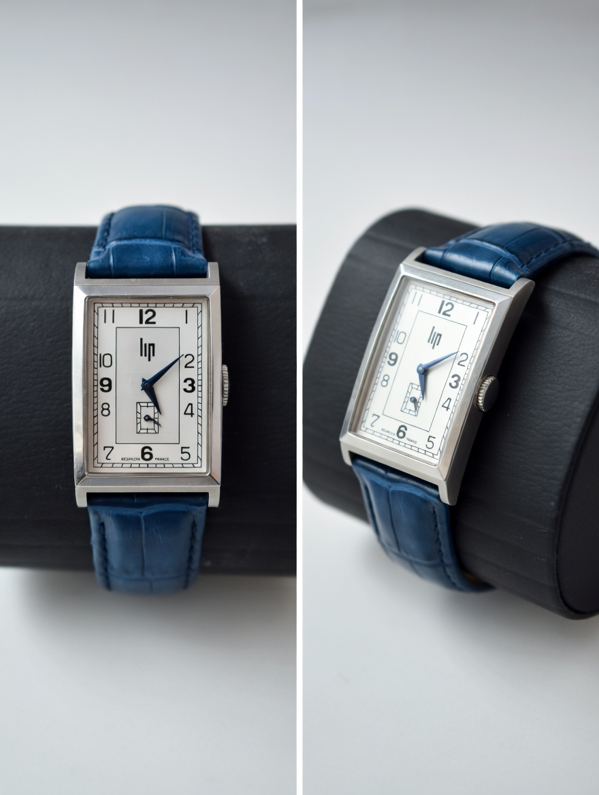
L’élégance intemporelle à la française
LIP T24 Churchill 671279 (Mouvement quartz)
La Lip T24 incarne à merveille le raffinement et le savoir-faire horloger français. Inspirée des modèles emblématiques des années Art déco, cette montre séduit par son boîtier rectangulaire aux lignes épurées et son cadran sobre, parfaitement équilibré. Son design se distingue par des chiffres arabes stylisés, un chemin de fer discret et une petite seconde à 6 heures, apportant caractère et authenticité à l’ensemble. Les aiguilles bleuies viennent sublimer le cadran clair, offrant un contraste élégant et une excellente lisibilité. Montée sur un bracelet en cuir, la Lip T24 est une montre aussi confortable que sophistiquée, idéale pour accompagner aussi bien une tenue habillée qu’un style plus décontracté. Véritable icône du patrimoine horloger français, la T24 s’adresse aux amateurs de montres au charme vintage, à la recherche d’une pièce à la fois discrète, distinctive et chargée d’histoire.
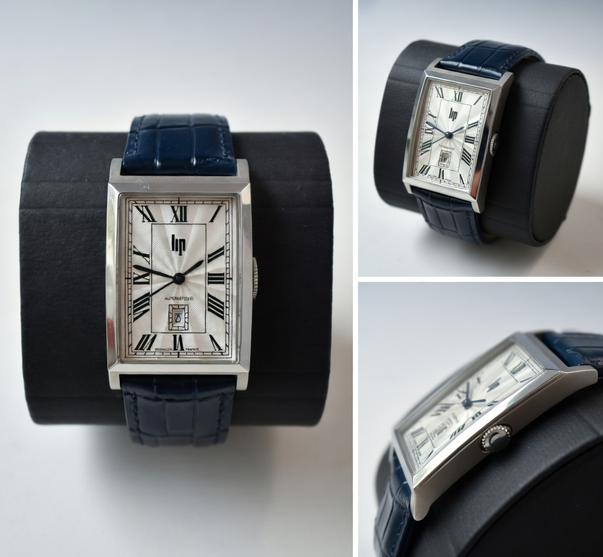
L’Élégance Historique au Masculin
LIP Churchill T26 671285 (Mouvement automatique)
La T26 incarne le parfait équilibre entre raffinement classique et modernité affirmée. Son boîtier rectangulaire en acier poli sublime un cadran guilloché aux finitions délicates, où les chiffres romains apportent une touche d’élégance intemporelle. Au cœur du design, les aiguilles fines parcourent le cadran avec précision, accompagnées d’un discret guichet date à 6 heures pour une fonctionnalité quotidienne. Le jeu de textures et de reliefs capte subtilement la lumière, offrant une lecture à la fois claire et sophistiquée. Son bracelet en cuir bleu à motif alligator, souple et confortable, vient parfaire l’ensemble avec caractère et distinction. Il épouse le poignet avec finesse, faisant de la T26 une montre aussi agréable à porter qu’à admirer.
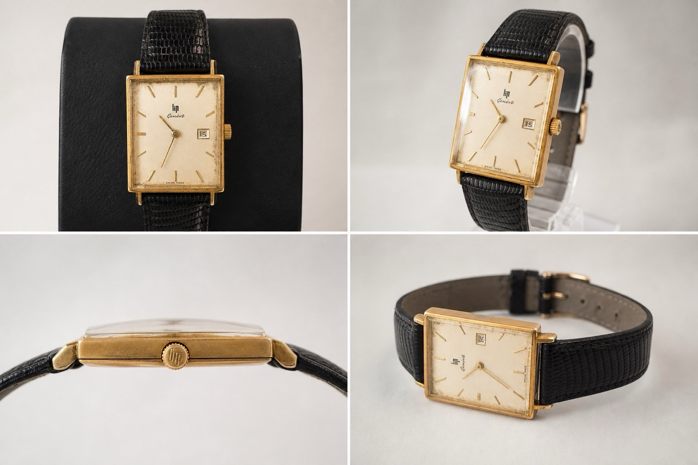
Horlogère suisse des années 1960-1970
Lip Dauphine (Mouvement mécanique)
Découvrez la Lip Dauphine, une montre emblématique alliant design rétro et précision suisse. Ce modèle, reconnaissable à son boîtier rectangulaire en or, incarne l’élégance classique des montres vintage des années 1960-1970.
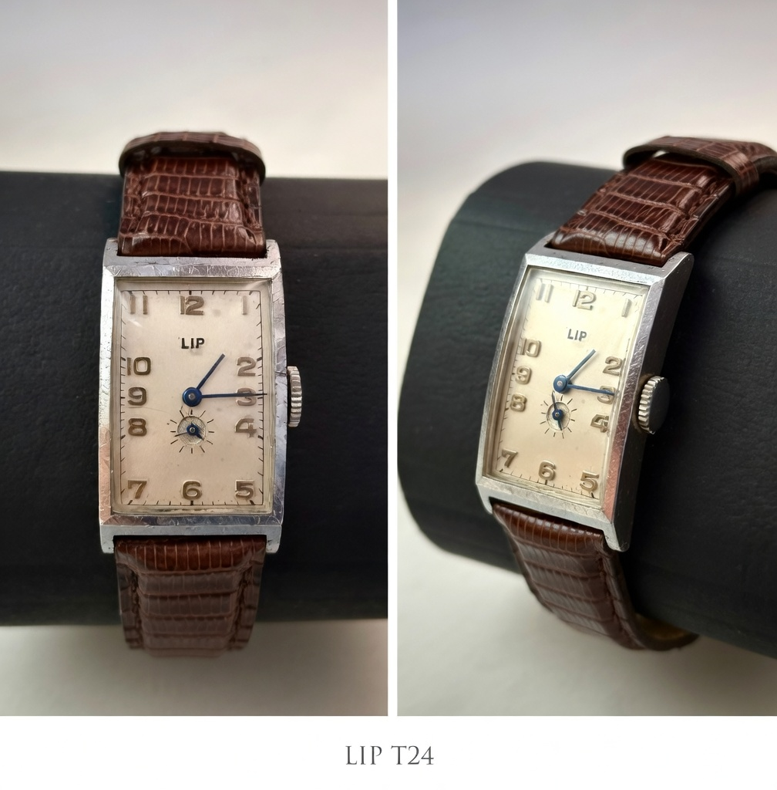
Années 1930–1950
Lip Churchill T18 (Mouvement mécanique)
Élégante et intemporelle, la LIP Churchill T18 incarne le raffinement de l’horlogerie française d’époque. Son boîtier rectangulaire au style Art Déco, associé à un cadran clair aux chiffres arabes stylisés, en fait une pièce au charme authentique. Dotée d’une petite seconde à 6 heures, cette montre mécanique reflète le savoir-faire traditionnel de la maison LIP. Son design fin et allongé épouse parfaitement le poignet, offrant une allure à la fois classique et distinguée. Le bracelet façon cuir marron complète harmonieusement l’ensemble, renforçant son caractère vintage et élégant.
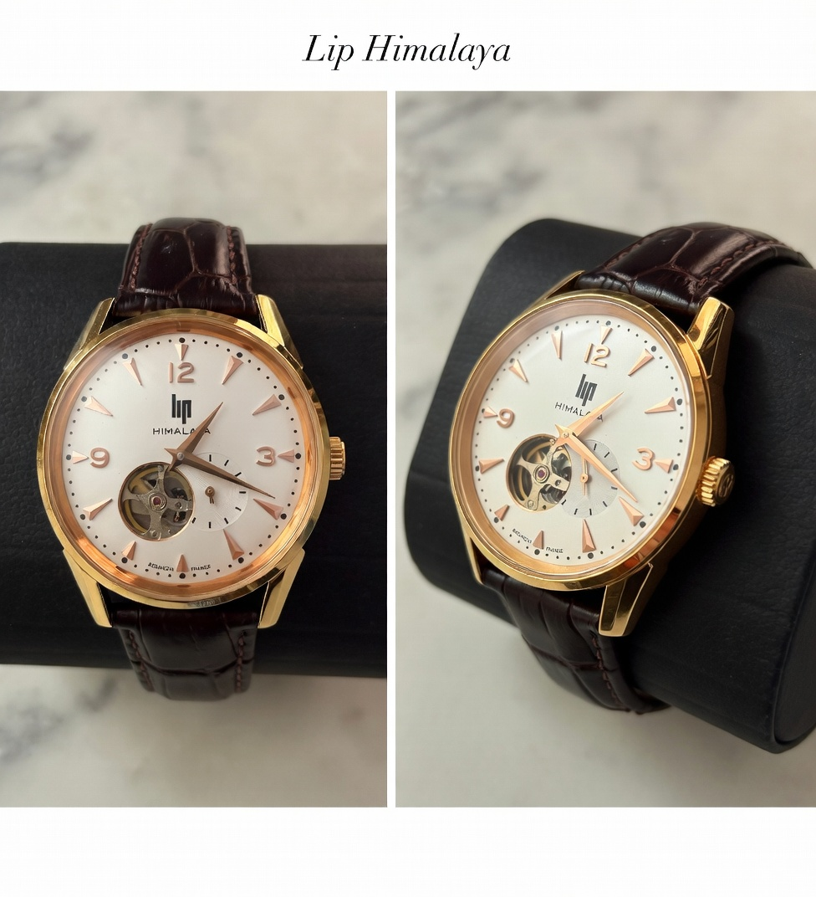
Fabriquée à Besançon, France (mention "BESANÇON FRANCE" sur le cadran)
Lip Himalaya automatique Open Heart (cœur ouvert)
C’est une Lip Himalaya automatique cœur ouvert, une montre élégante d’inspiration classique, avec un style habillé et un aperçu du mouvement mécanique — ce qui est très apprécié des amateurs d’horlogerie.
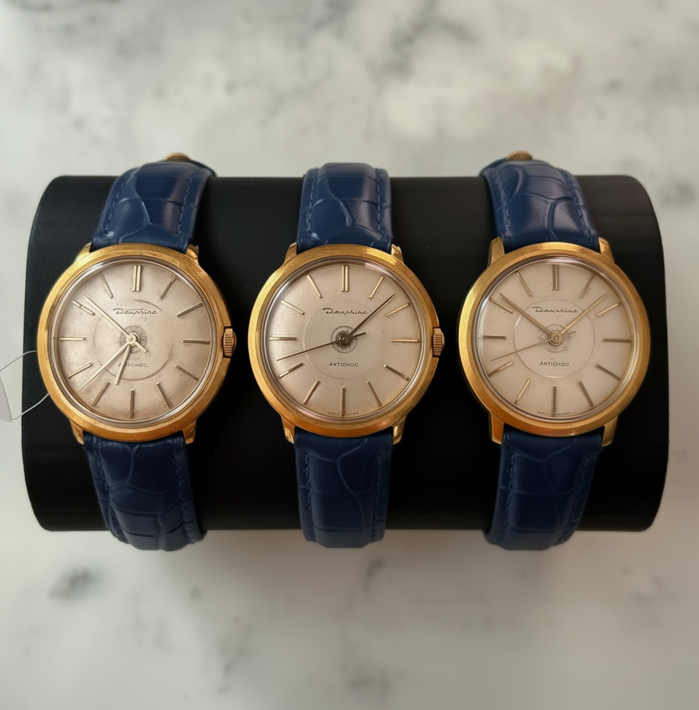
Emblématique de la marque française Lip, très populaire dans les années 1950–1960
Lip Dauphine (Mouvement mécanique à remontage manuel)
La Lip Dauphine est un modèle emblématique de la marque française Lip, produite principalement dans les années 1960-1970. Le nom "Dauphine" fait référence à la gamme haut de gamme de Lip à cette époque. Le modèle "Artichoc" est une variante spécifique reconnaissable à son cadran blanc et ses petits cadrans subseconds. Cette montre est un excellent exemple du savoir-faire horloger français de l'époque, avec un design intemporel qui reste très apprécié des collectionneurs.
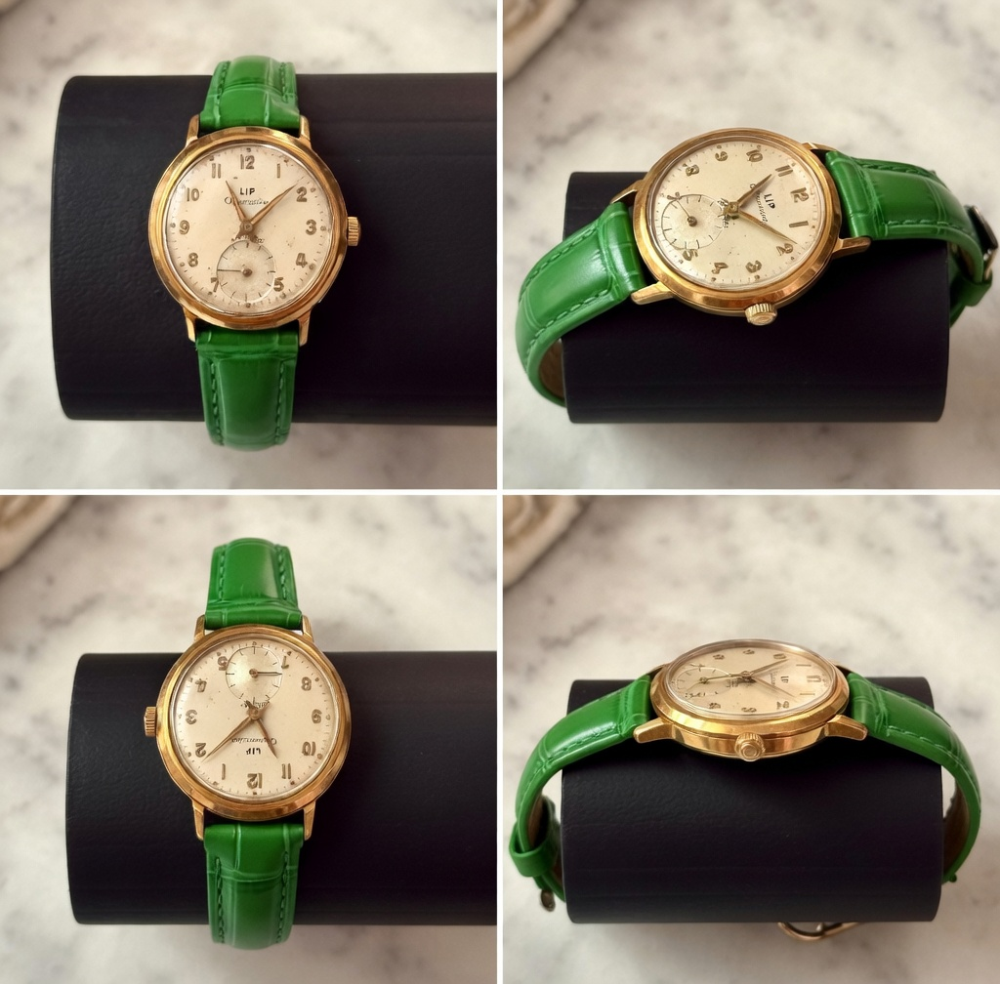
LIP Souveraine – Montre Vintage Française à Petite Seconde - Années 50/60
Lip souveraine(Mouvement mécanique (remontage manuel)
La Souveraine est l’une des collections les plus prestigieuses de Lip, reconnue pour son savoir-faire horloger et son design sophistiqué. Inspirée par l’élégance française, cette gamme incarne le luxe accessible avec des montres alliant précision suisse et esthétique raffinée.
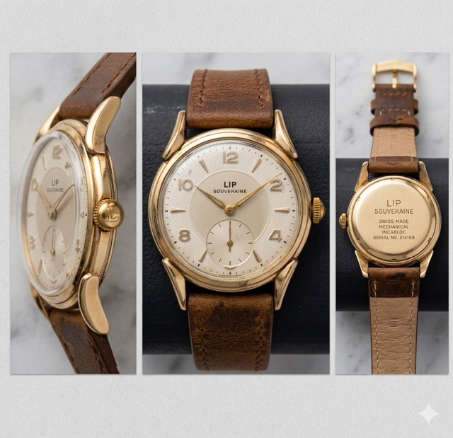
Modèle iconique des années 50
Lip Himalaya "Petite Seconde"(Mouvement mécanique)
L’histoire au poignet : La montre des sommets Née en 1954 d'une amitié entre Fred Lip et le guide de haute montagne Lionel Terray, la Lip Himalaya est devenue une légende de l'horlogerie française. Ce modèle a acquis sa renommée mondiale en accompagnant les plus grands alpinistes, comme Maurice Herzog, lors de la première ascension de l'Annapurna (8 000 mètres). Réputée pour sa robustesse exceptionnelle à l’époque, elle était le choix de prédilection des explorateurs et des sportifs.
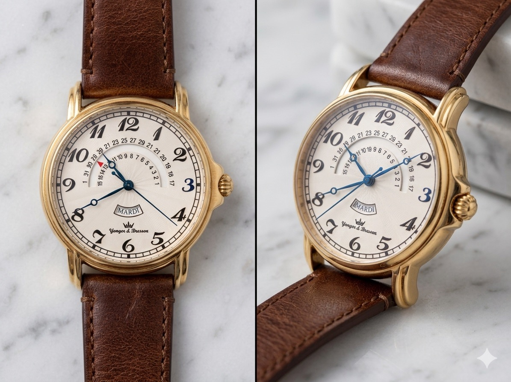
Calendrier rétrograde” ou “multi-calendrier” chez Yonger & Bresson
Yonger & Bresson – montre calendrier rétrograde (Mouvement quartz)
Bien que non visible sur l'image, les montres Yonger & Bresson "Saturday" sont généralement équipées de mouvements à quartz (japonais, comme les calibres Miyota) ou automatiques (mouvements Seiko ou Miyota pour les modèles haut de gamme).
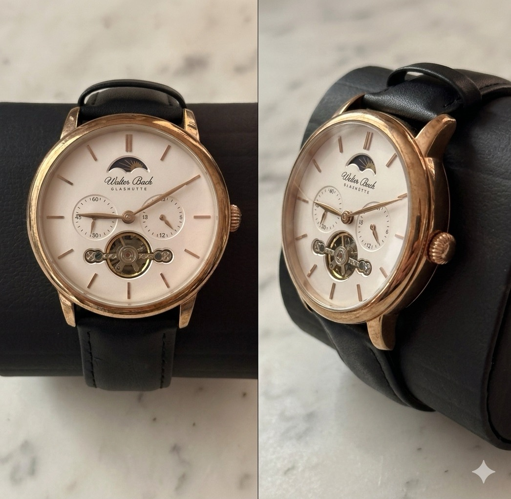
montre chronographe emblématique alliant précision allemande et design raffiné
Walter Bach Glashütte “Luna Open Heart” (Mouvement automatique)
Élégante et intemporelle, la montre Walter Bach Glashütte “Luna Open Heart” incarne le raffinement horloger dans toute sa simplicité. Son cadran épuré, sublimé par des index fins et des aiguilles élancées, met en valeur un design classique rehaussé de complications modernes. À 12 heures, un indicateur phase de lune apporte une touche poétique et sophistiquée, tandis que les deux sous-cadrans équilibrent parfaitement l’ensemble. À 6 heures, l’ouverture open heart révèle le cœur battant du mécanisme automatique, offrant un spectacle mécanique captivant
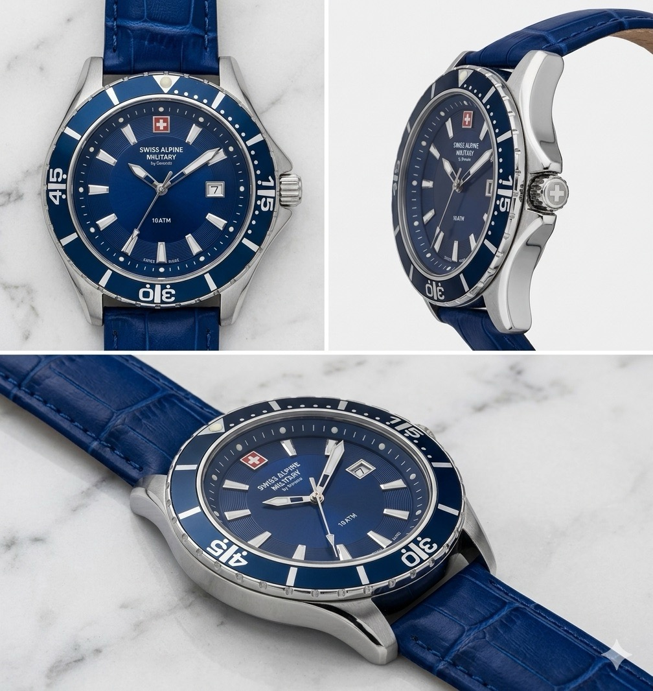
Dotée d'un mouvement quartz suisse de haute précision, elle garantit une fiabilité exemplaire. Avec son étanchéité de 10 ATM (100 mètres)
Montre Swiss Alpine Military by Grovana - Collection Nautilus (7040.1)- Mouvement quartz
Alliant robustesse militaire et élégance sportive, cette montre Swiss Alpine Military by Grovana est l'accessoire indispensable pour l'homme moderne. Conçue en Suisse, elle se distingue par son cadran bleu profond et sa lunette rotative assortie, offrant un look "diver" (plongeuse) à la fois classique et dynamique. Son bracelet en cuir bleu véritable à motif crocodile apporte une touche de sophistication supplémentaire, permettant de passer facilement d'une tenue décontractée à un style plus formel. Dotée d'un mouvement quartz suisse de haute précision, elle garantit une fiabilité exemplaire. Avec son étanchéité de 10 ATM (100 mètres), elle vous accompagne dans toutes vos aventures, que ce soit au quotidien ou lors de vos activités nautiques.
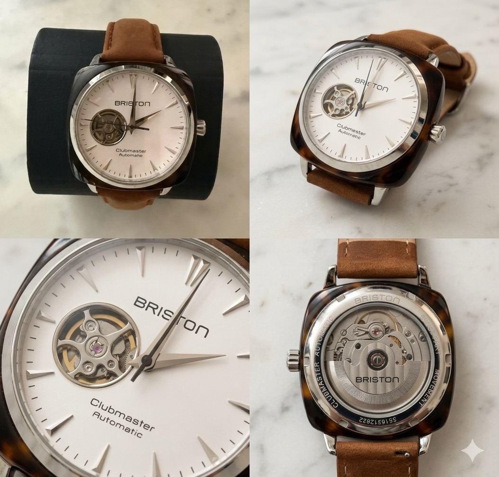
Une ouverture « Open Heart » permet d'observer le balancier du mouvement automatique en plein mouvement
BRISTON Clubmaster (Mouvement automatique)Un Design Iconique et Rétro La ligne Clubmaster Iconic reprend la forme emblématique de Briston : le « carré-cambré ». Son boîtier de 40 mm est fabriqué en acétate de cellulose italien, un matériau noble utilisé dans la lunetterie de luxe, offrant des nuances ambrées uniques à chaque exemplaire. Les finitions en acier poli apportent une touche de modernité et de robustesse.
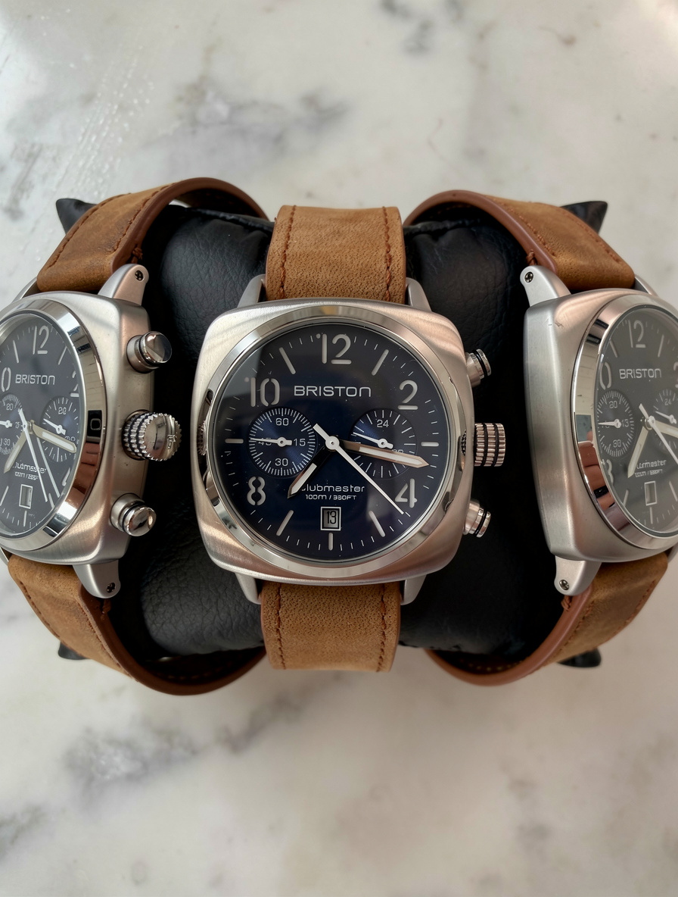
Briston est une marque française qui revisite l’horlogerie classique avec un style moderne, inspiré de l’univers sportif et du chic décontracté.
BRISTON Clubmaster (Mouvement quartz)La Briston Clubmaster Chronograph séduit par son design élégant et sportif. Son boîtier carré signature associé à un cadran bleu profond lui confère un style à la fois moderne et vintage. Dotée de fonctions chronographe, d’un affichage 24h et d’une date, elle allie esthétique et performance. Son bracelet en cuir marron apporte une touche chic et intemporelle, idéale pour toutes les occasions. Étanche jusqu’à 100 mètres, elle vous accompagne aussi bien au quotidien que lors de vos activités.
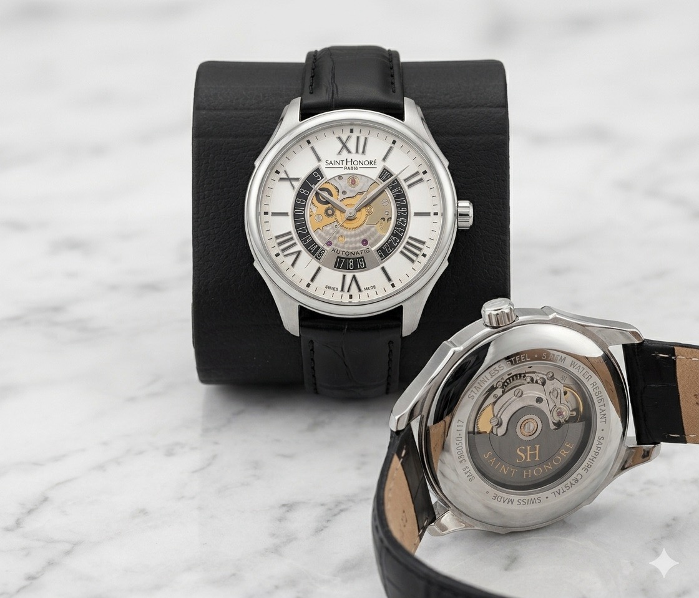
Découvrez l’élégance intemporelle de cette montre Saint Honoré Paris, une pièce raffinée qui incarne le savoir-faire horloger et le style parisien.
Saint Honoré Paris (Mouvement automatique)Fondée en 1885 par Victorin Frésard, la maison Saint Honoré est l'un des rares horlogers français à avoir su traverser les décennies en alliant l'élégance parisienne à la rigueur technique. Installée à Charquemont, dans le Jura (le berceau de l'horlogerie française), la marque s'inspire de l'art de vivre français et du luxe de la célèbre rue Saint-Honoré à Paris. Ses créations se distinguent par une esthétique "chic et contemporaine", souvent récompensée pour son innovation, notamment avec des modèles célèbres intégrant de l'acier provenant de la Tour Eiffel.
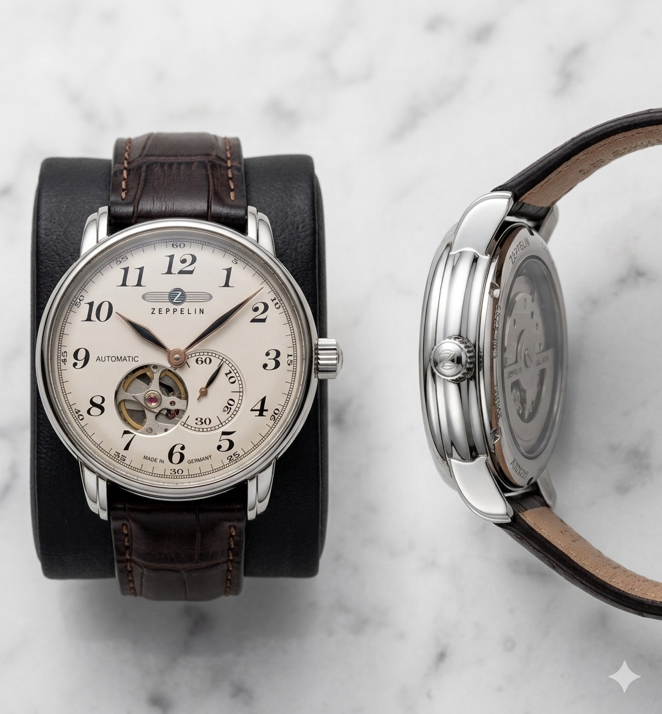
La marque Zeppelin rend hommage aux célèbres dirigeables allemands, symboles d’innovation et d’élégance du début du XXe siècle
Zeppelin (Mouvement automatique)Inspirée de l’âge d’or de l’aviation allemande, cette montre Zeppelin incarne le parfait équilibre entre tradition horlogère et design raffiné. Son cadran épuré, orné de chiffres arabes vintage, offre une lisibilité optimale tout en affirmant un style classique et élégant. Dotée d’un mouvement automatique, elle fonctionne sans pile grâce aux mouvements naturels du poignet, garantissant précision et authenticité. Son ouverture « open heart » à 7 heures laisse apparaître le mécanisme interne, ajoutant une touche technique et fascinante.
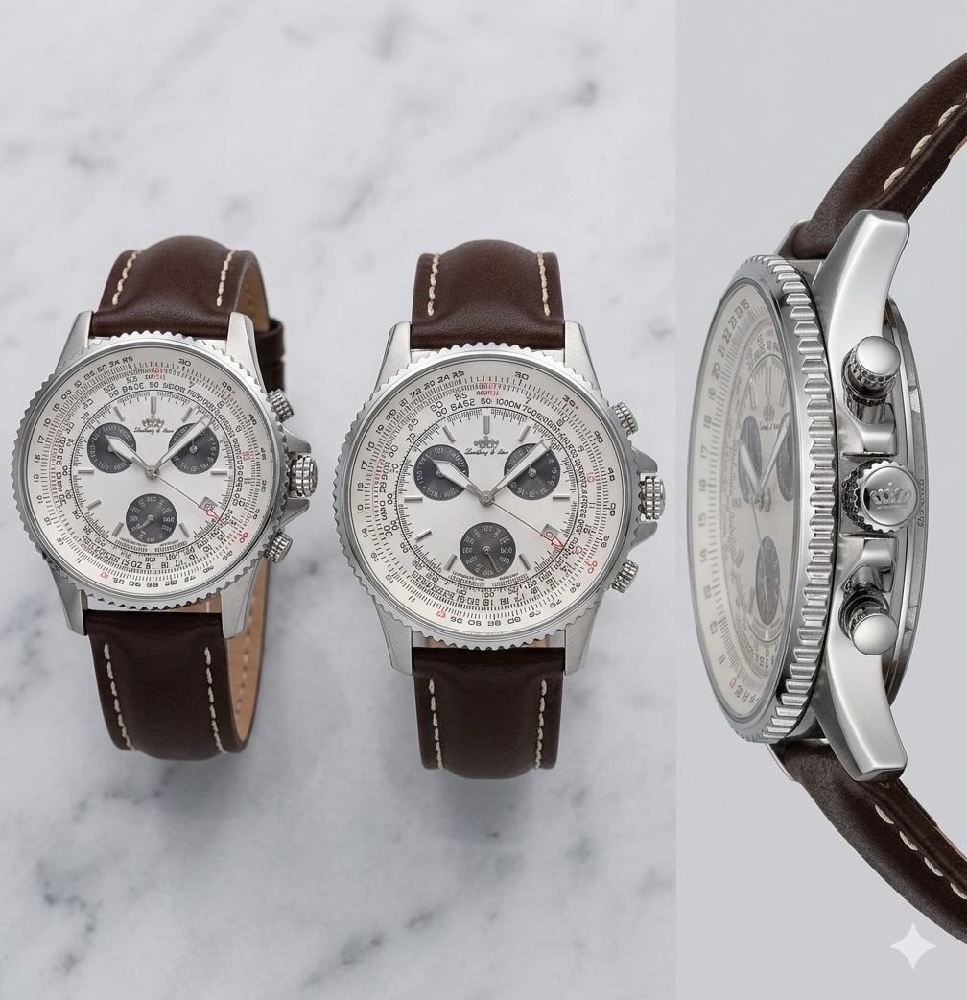
Design inspiré des montres d’aviation
Lindberg & Sons (Mouvement automatique)La montre Lindberg & Sons incarne un style classique revisité avec une touche technique affirmée. Son cadran richement détaillé attire immédiatement le regard grâce à ses multiples échelles et complications, offrant à la fois esthétique et fonctionnalité. Dotée d’un design inspiré des montres d’aviation et d’instruments de précision, elle présente un affichage multifonction avec indicateurs jour, date et mois. Son cadran clair, contrasté par des sous-compteurs foncés, garantit une excellente lisibilité tout en ajoutant du caractère à la pièce.
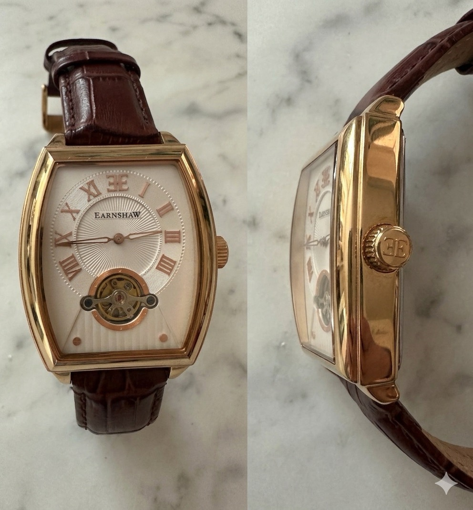
Élégance intemporelle & mécanique apparente
Thomas Earnshaw (Mouvement mécanique)Apportez une touche de raffinement à votre poignet avec cette montre Thomas Earnshaw, un modèle qui allie parfaitement tradition horlogère et design contemporain. Dotée d’un boîtier doré à la forme tonneau, cette pièce se distingue par son allure sophistiquée et son caractère unique. Son cadran finement travaillé présente des chiffres romains élégants ainsi qu’un motif guilloché subtil qui capte la lumière avec délicatesse. Le véritable atout de cette montre réside dans son ouverture “open heart” à 6 heures, laissant entrevoir le mécanisme en mouvement. Un détail fascinant qui séduira les amateurs d’horlogerie et les passionnés de belles mécaniques. Son bracelet en cuir marron texturé assure confort et style, s’adaptant aussi bien à une tenue formelle qu’à un look plus décontracté.
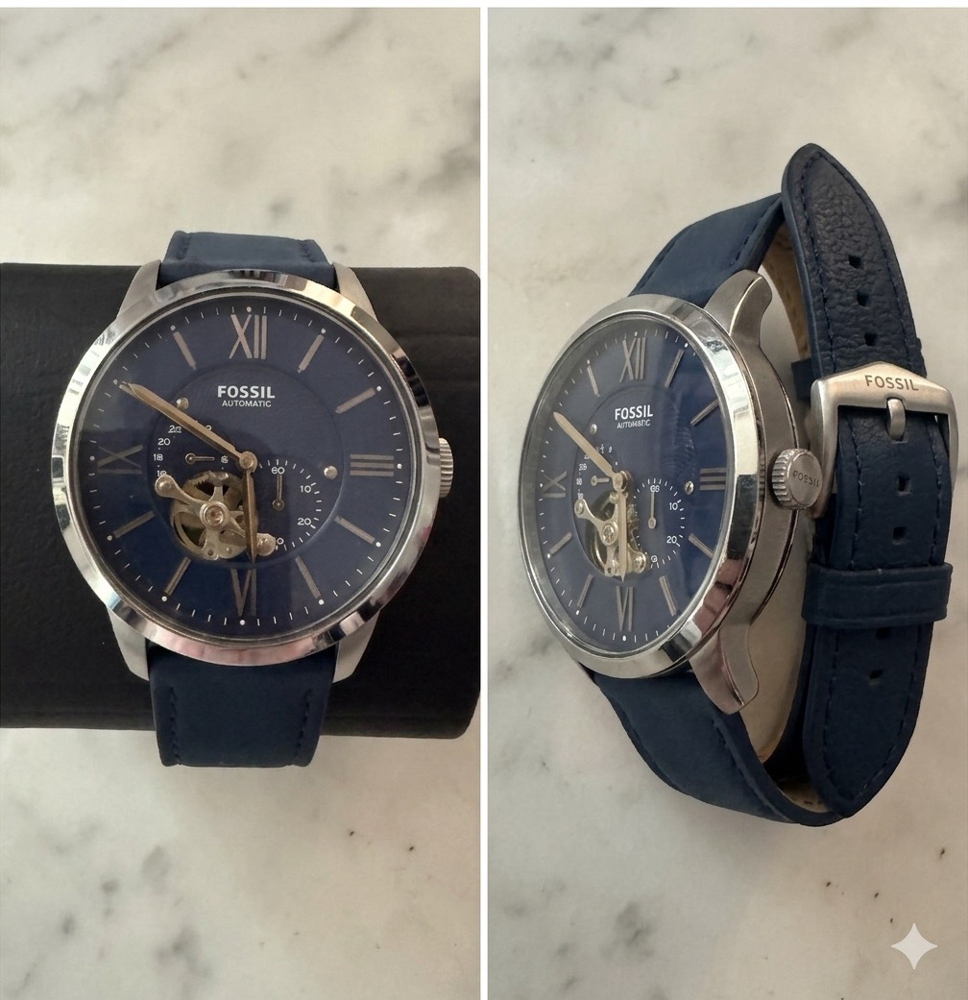
Élégance intemporelle
Fossil (Mouvement automatique)Apportez une touche de raffinement à votre poignet avec cette montre Fossil automatique au design intemporel. Son cadran bleu profond, subtilement travaillé, met en valeur des index épurés et des chiffres romains qui renforcent son allure classique et sophistiquée. Dotée d’un mécanisme automatique, cette montre fonctionne grâce aux mouvements du poignet, alliant tradition horlogère et modernité. Son ouverture « cœur ouvert » laisse apparaître le mécanisme interne, offrant un spectacle fascinant à chaque regard. Le boîtier en acier inoxydable poli s’associe parfaitement à un bracelet en cuir bleu, assurant confort et élégance au quotidien. Idéale aussi bien pour une tenue habillée que décontractée, cette montre est un véritable accessoire de style.
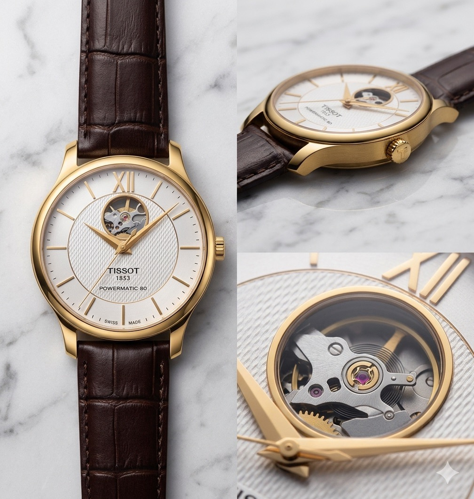
Modèle Powermatic 80
Tissot (Mouvement automatique à coeur ouvert)Alliant savoir-faire horloger suisse et design raffiné, cette montre Tissot séduit par son style classique et ses finitions haut de gamme. Son cadran épuré, sublimé par une ouverture « open heart », laisse apparaître le mécanisme automatique en mouvement, offrant un spectacle mécanique fascinant au quotidien. Le boîtier en acier inoxydable avec finition plaqué or apporte une touche de luxe discrète, parfaitement équilibrée par un bracelet en cuir marron au motif alligator, confortable et élégant. Les index fins et les aiguilles délicates renforcent le caractère sophistiqué de cette pièce. Dotée du mouvement automatique Powermatic 80, cette montre offre une réserve de marche impressionnante allant jusqu’à 80 heures, garantissant précision et performance sans compromis.
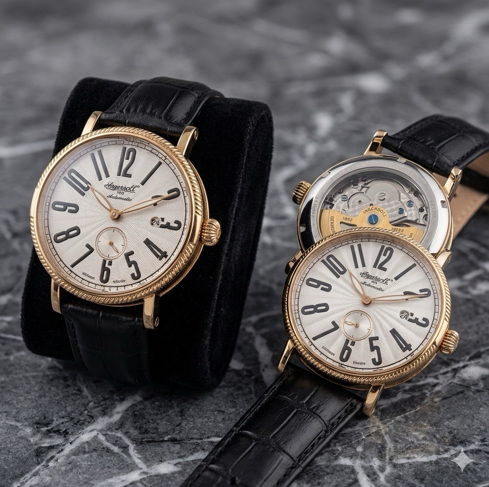
Élégance Vintage & Précision
Ingersoll (Mouvement automatique)Alliant tradition horlogère et design raffiné, cette montre Ingersoll automatique incarne le charme du classique revisité. Son boîtier doré aux finitions texturées met en valeur un cadran travaillé avec finesse, offrant un jeu de relief subtil et élégant. Les grands chiffres arabes apportent une excellente lisibilité, tandis que le guichet date discret et le compteur de petite seconde à 6h ajoutent une touche de sophistication fonctionnelle. Le tout est sublimé par un bracelet en cuir noir, apportant confort et distinction au poignet. Pensée pour les amateurs de belles mécaniques, cette montre automatique se recharge naturellement grâce aux mouvements du poignet, sans nécessiter de pile.
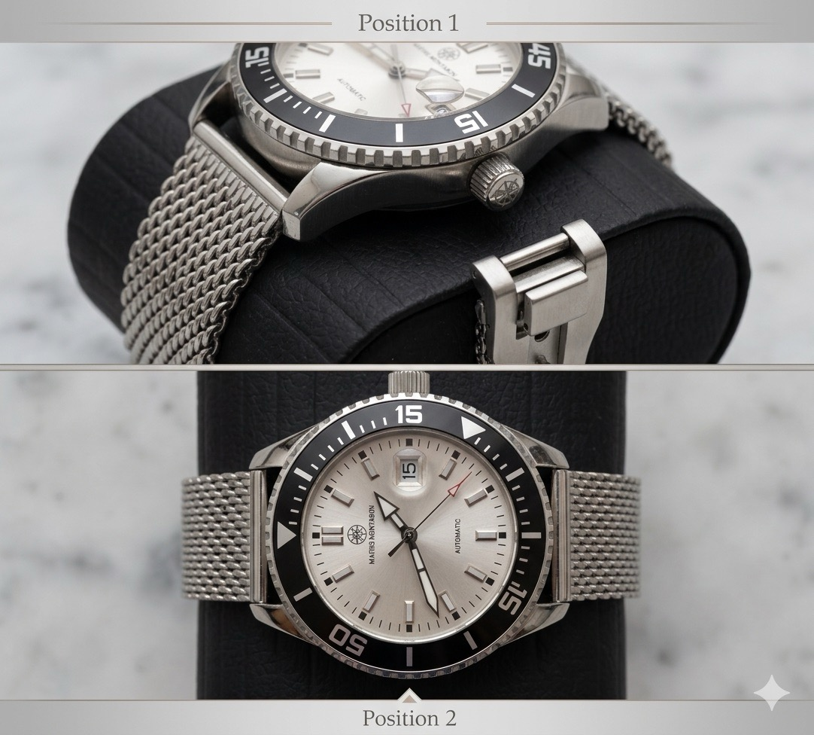
Élégante et Sophistiquée
Mathis Montaudon (Mouvement automatique)Affirmez votre style avec cette montre automatique au design raffiné, alliant élégance classique et esprit sportif. Son cadran clair, subtilement texturé, offre une excellente lisibilité grâce à ses index appliqués et ses aiguilles luminescentes. La lunette noire tournante, inspirée des montres de plongée, apporte une touche dynamique et moderne, tandis que le boîtier en acier inoxydable garantit robustesse et durabilité au quotidien. Son bracelet en maille métallique assure un confort optimal et un ajustement parfait au poignet. Dotée d’un mouvement automatique, cette montre fonctionne sans pile, se rechargeant naturellement grâce aux mouvements du poignet. Le guichet date positionné à 3 heures ajoute une fonctionnalité pratique à son esthétique soignée. Polyvalente et intemporelle, elle s’adapte aussi bien à une tenue habillée qu’à un look décontracté, faisant d’elle un accessoire indispensable pour toutes les occasions
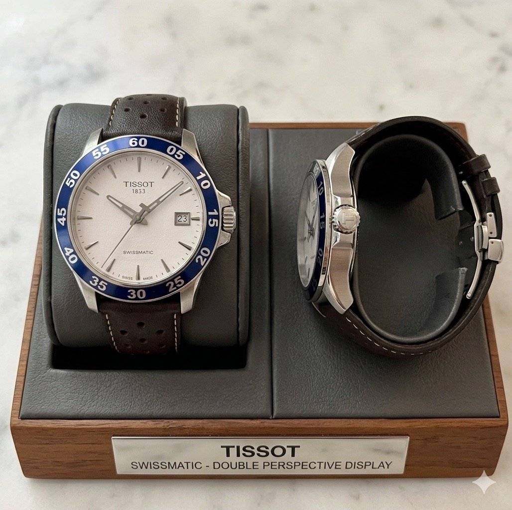
Élégance et précision suisse
Tissot (Mouvement automatique Swissmatic)Alliant tradition horlogère et design contemporain, cette montre Tissot Swissmatic incarne le savoir-faire suisse depuis 1853. Son cadran épuré de couleur argentée met en valeur des index fins et des aiguilles élégantes, offrant une lisibilité optimale au quotidien. La lunette bleue graduée apporte une touche sportive et moderne, parfaitement équilibrée par un bracelet en cuir marron au style classique et confortable. Le guichet date à 3 heures ajoute une fonctionnalité pratique, idéale pour un usage quotidien. Animée par un mouvement automatique Swissmatic, cette montre garantit fiabilité et précision sans nécessiter de pile.
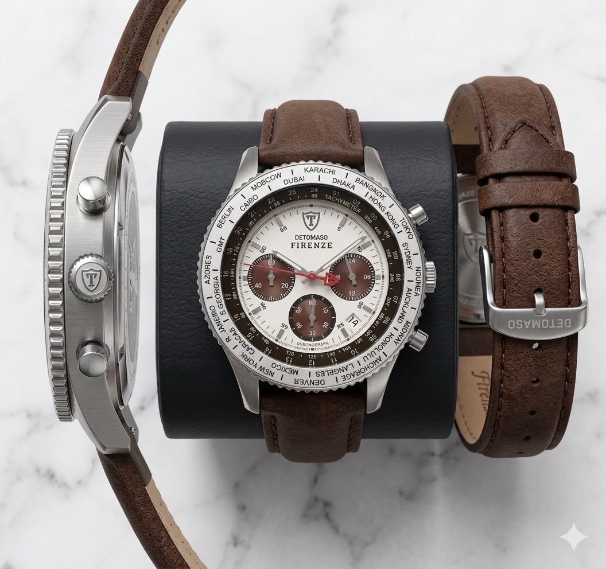
L'essence du chic italien et de la précision
DETOMASO Firenze (Mouvement Quartz)Inspirée par l'élégance intemporelle de Florence, la montre DETOMASO Firenze est le choix idéal pour l'homme qui refuse de choisir entre sportivité et raffinement. Son cadran blanc immaculé de type "Panda" est souligné par des compteurs noirs contrastés, offrant un look vintage irrésistible qui rappelle l'âge d'or des courses automobiles. Équipée d'une lunette rotative affichant les fuseaux horaires du monde entier, elle est le compagnon de voyage ultime. Son bracelet en cuir brun surpiqué apporte une touche de chaleur et de caractère, rendant cette pièce aussi à l'aise avec un costume qu'avec une tenue décontractée de week-end.
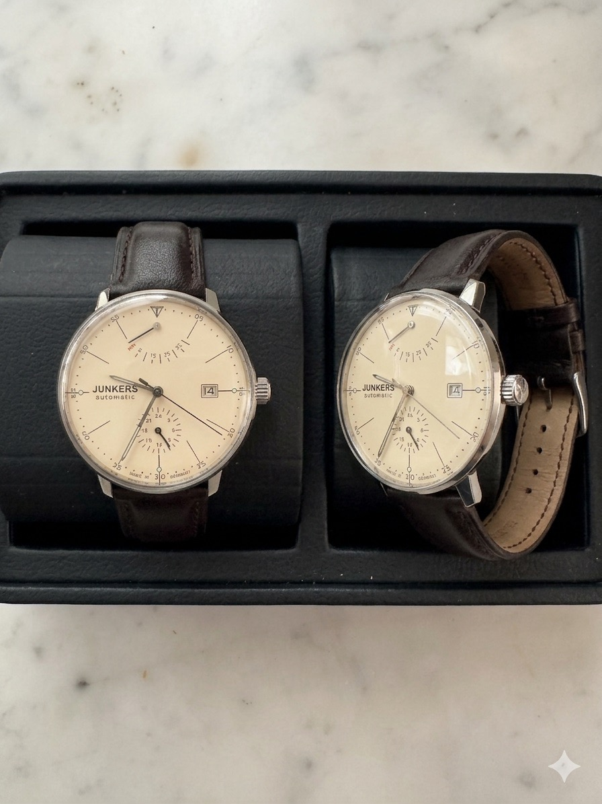
Design classique et intemporel
Junkers (Mouvement automatique)Élégante et intemporelle, cette montre Junkers automatique incarne le parfait équilibre entre design minimaliste et savoir-faire horloger allemand. Son cadran épuré de couleur ivoire offre une lisibilité optimale, sublimée par des index fins et des aiguilles élancées. Dotée d’un mouvement automatique, elle se recharge naturellement au rythme de vos mouvements, alliant précision et praticité au quotidien. Son affichage complet comprend un compteur 24 heures, un indicateur de réserve de marche ainsi qu’un guichet date discrètement intégré. Son boîtier en acier inoxydable s’associe harmonieusement à un bracelet en cuir marron, apportant une touche de sophistication et de confort au poignet. Fabriquée en Allemagne, cette montre reflète une exigence de qualité et une attention aux détails remarquables.
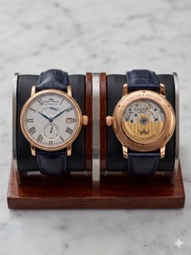
Élégance Classique et Savoir-Faire Français
Yonger & Bresson (Mouvement automatique)ublime alliance de tradition horlogère et d’élégance intemporelle, cette montre automatique incarne le raffinement à la française. Son cadran épuré, orné de chiffres romains noirs et d’aiguilles bleuies, offre une lecture claire et distinguée de l’heure. Le boîtier à la finition dorée apporte une touche de luxe discrète, parfaitement équilibrée par un bracelet en cuir noir au style classique. Les détails soignés, tels que le guichet de date à 3 heures et les sous-compteurs délicatement intégrés, témoignent d’un savoir-faire précis et d’une attention particulière portée à chaque élément. Animée par un mouvement automatique, cette montre fonctionne sans pile, au rythme naturel de vos mouvements, pour une expérience authentique et durable.
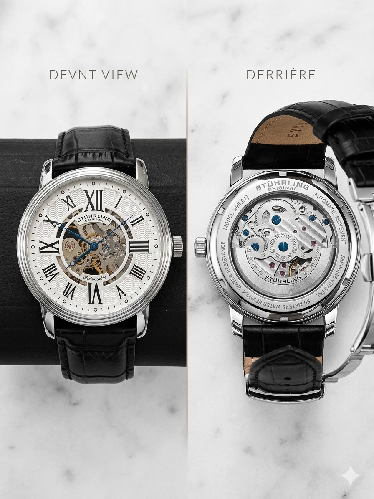
Collection Legacy "Atrium" Squelette
Stührling Original (Mouvement automatique)Découvrez une montre d’exception qui allie tradition horlogère et raffinement moderne. Dotée d’un cadran squelette sophistiqué, cette montre révèle avec subtilité la beauté de son mécanisme automatique en mouvement. Son cadran argenté, finement texturé, est sublimé par des chiffres romains noirs apportant une touche classique et intemporelle. Les aiguilles bleutées offrent un contraste élégant, facilitant la lecture de l’heure tout en renforçant son caractère distingué. Le boîtier en acier inoxydable poli reflète une finition haut de gamme, tandis que le bracelet en cuir noir façon crocodile assure confort et élégance au poignet.
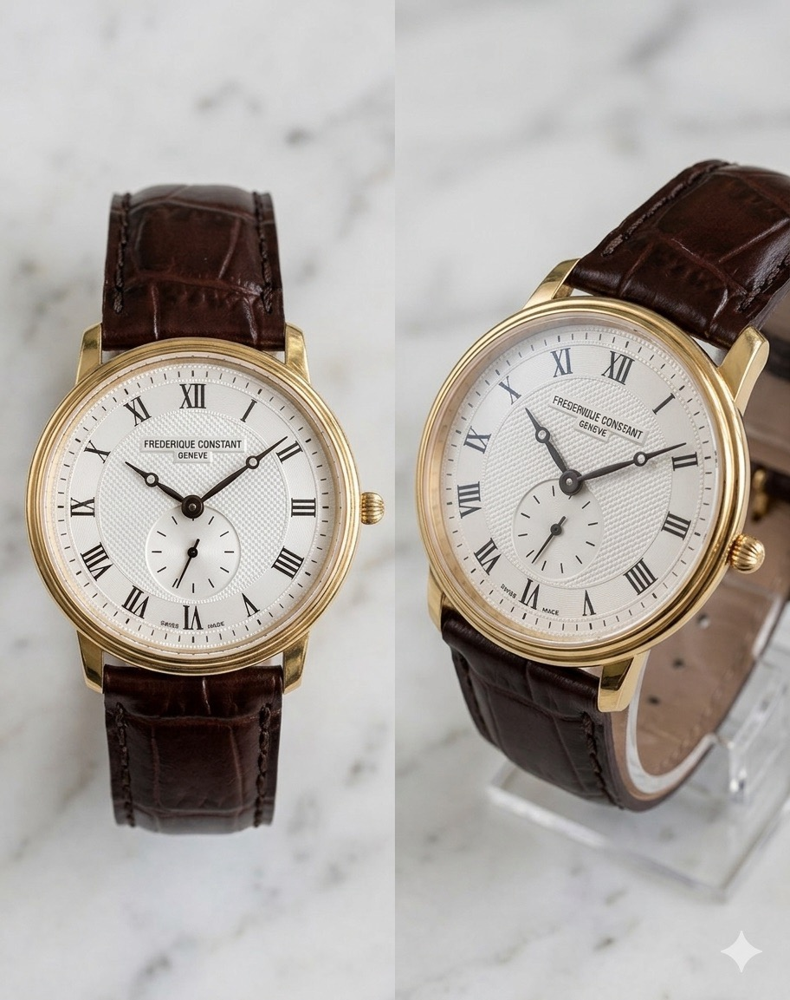
Une référence en horlogerie suisse réputée pour son excellence et son innovation
Frederique Constant (Mouvement quartz)Cette montre Frédérique Constant incarne parfaitement le raffinement horloger suisse et le style intemporel. Son design épuré et sophistiqué en fait une pièce idéale pour les amateurs de montres classiques. Dotée d’un boîtier en plaqué doré, elle présente un cadran blanc guilloché d’une grande finesse, sublimé par des chiffres romains noirs et des aiguilles élégantes. La petite seconde à 6 heures apporte une touche traditionnelle très appréciée des connaisseurs. Son bracelet en cuir marron façon crocodile renforce son allure chic et s’adapte parfaitement à un usage quotidien comme aux occasions habillées.
vendu
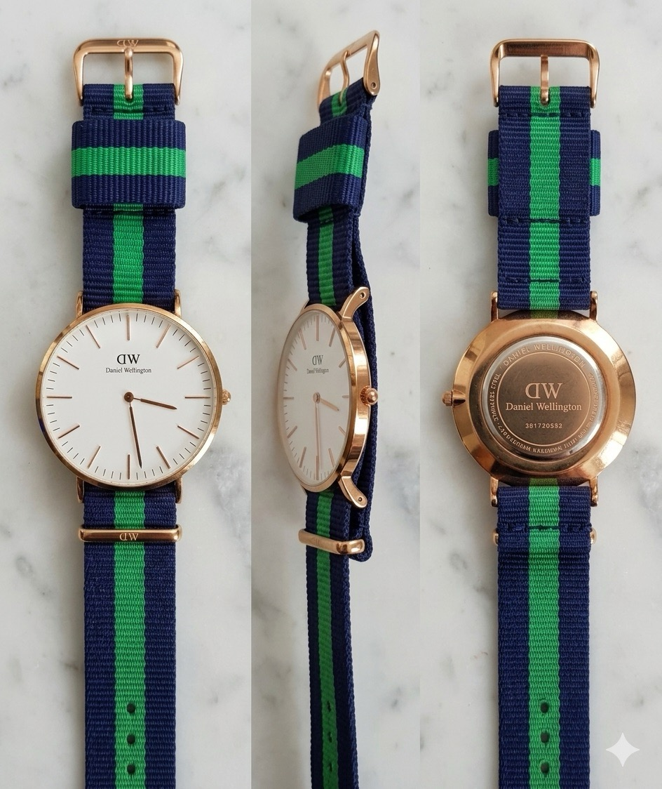
Cette montre incarne parfaitement l’équilibre entre simplicité et style
Daniel Wellington (Mouvement quartz)Apportez une touche de sophistication à votre style avec cette montre Daniel Wellington au design minimaliste et intemporel. Son cadran blanc épuré, rehaussé d’index fins et d’aiguilles couleur or rose, offre une lecture claire et raffinée de l’heure. Le boîtier en finition dorée ajoute une note chic et moderne, parfaite pour toutes les occasions, du quotidien aux événements plus habillés. Le bracelet en tissu type NATO, bleu avec une bande centrale verte, apporte une touche originale et décontractée, tout en assurant un confort optimal au poignet.
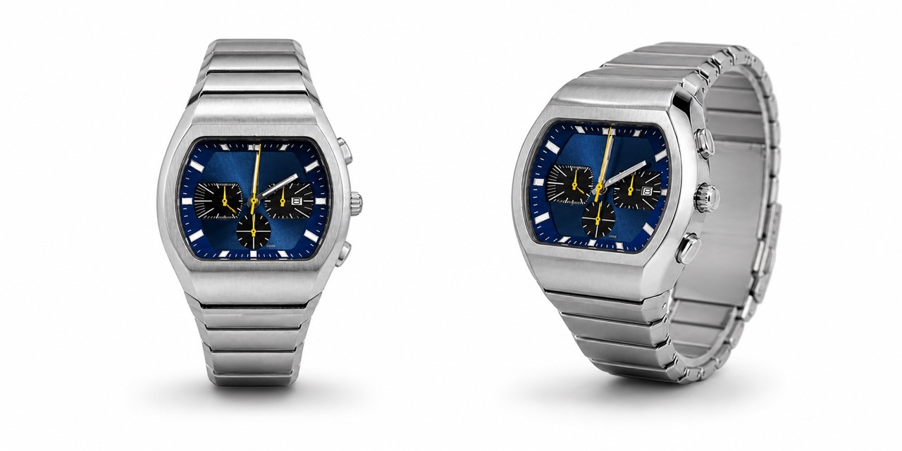
Style rétro et performance moderne
Festina (Mouvement quartz)Alliez robustesse et style avec cette montre Festina Chronographe, un modèle emblématique qui combine un design sportif affirmé et une élégance intemporelle. Ce garde-temps se distingue par son boîtier imposant en acier inoxydable de forme tonneau (rectangulaire aux bords arrondis), offrant une présence unique au poignet. Son cadran bleu profond est rehaussé par des touches de jaune dynamique sur la trotteuse du chronographe, apportant une touche de modernité et une lisibilité parfaite. Conçue pour durer, elle est équipée d'un bracelet intégré en acier aux finitions brossées, garantissant un confort optimal et une grande résistance au quotidien.
vendu
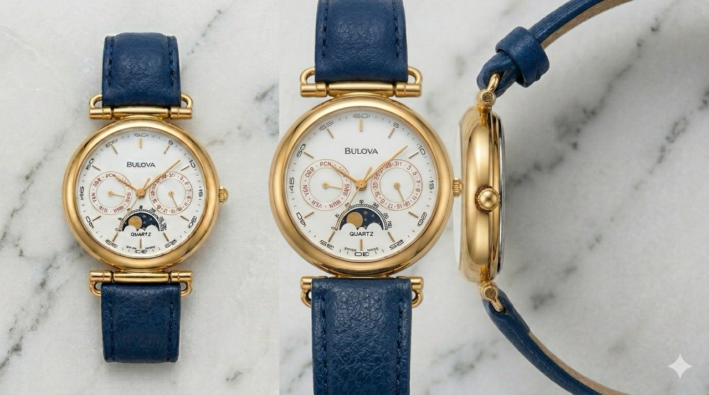
Ce modèle vintage est une pièce de collection rare et élégante, qui se distingue par son charme classique et ses complications horlogères sophistiquées.
Bulova (Mouvement Quartz)Fondée en 1875 par Joseph Bulova à New York, la marque Bulova est une icône de l'horlogerie mondiale. Reconnue pour son esprit pionnier, elle a marqué l'histoire par des innovations majeures, comme la création de la première montre électronique au monde, l'Accutron, et sa participation active aux missions spatiales de la NASA (notamment lors de la mission Apollo 15 sur la Lune). Alliant le design américain audacieux à l'excellence de la fabrication suisse, Bulova propose des garde-temps qui traversent les époques avec élégance. Aujourd'hui, la marque continue de séduire les collectionneurs par son mélange unique d'histoire, de technologie de pointe et de raffinement esthétique.
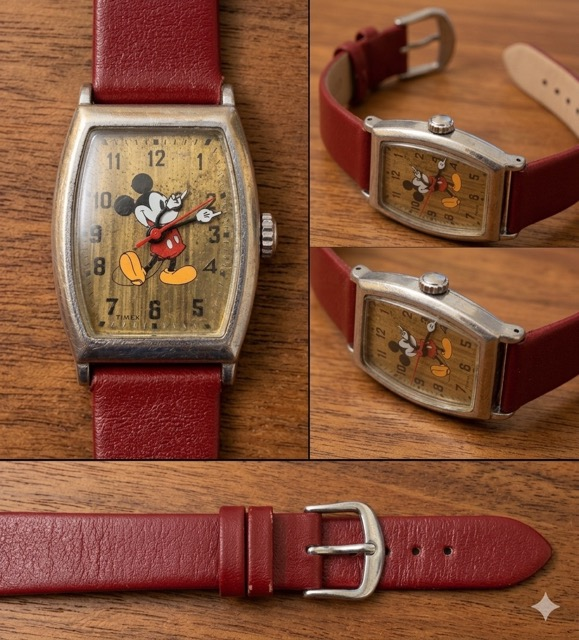
Montre Ingersoll Vintage Mickey Mouse
Ingersoll (Mouvement mécanique)Découvrez cette superbe montre Ingersoll Mickey Mouse, une pièce de collection incontournable pour les amateurs de Disney et d'horlogerie vintage. Lancée pour la première fois en 1933, la collaboration entre Ingersoll et Walt Disney a non seulement révolutionné le marché des produits dérivés, mais a également sauvé l'entreprise Ingersoll de la faillite, faisant de cette montre "la montre qui a rendu Mickey célèbre".
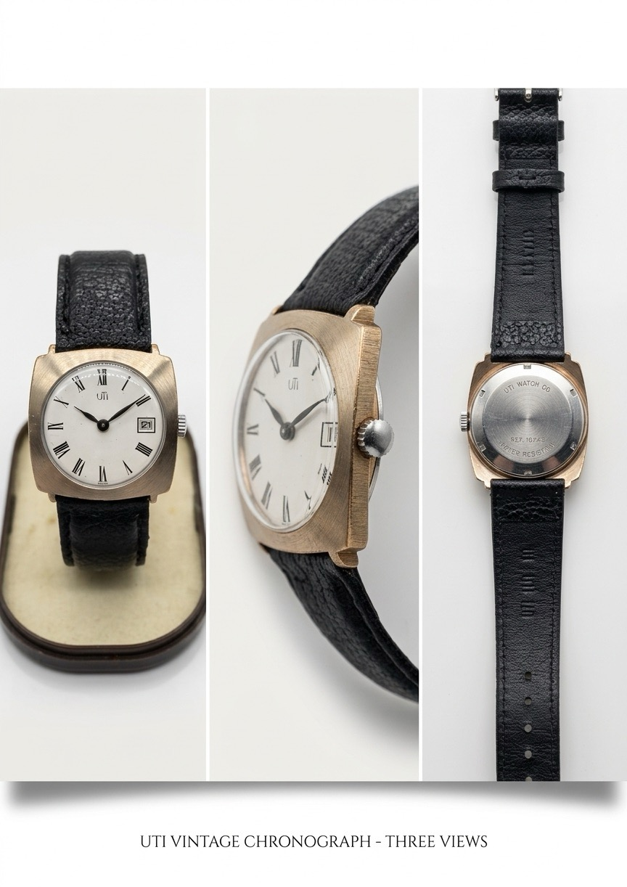
L’élégance intemporelle de l’horlogerie franco-suisse
UTI (Mouvement mécanique)Découvrez une pièce d'histoire horlogère avec cette montre UTI. Fondée au début du XXe siècle par Georges Meyer, la marque UTI (contraction de Utinam, "S'il plaît à Dieu" en latin) incarne l'âge d'or de l'horlogerie de Besançon et de La Chaux-de-Fonds. Réputée pour ses collaborations avec les plus grandes maisons de luxe comme Van Cleef & Arpels, UTI est une signature recherchée par les collectionneurs avertis.
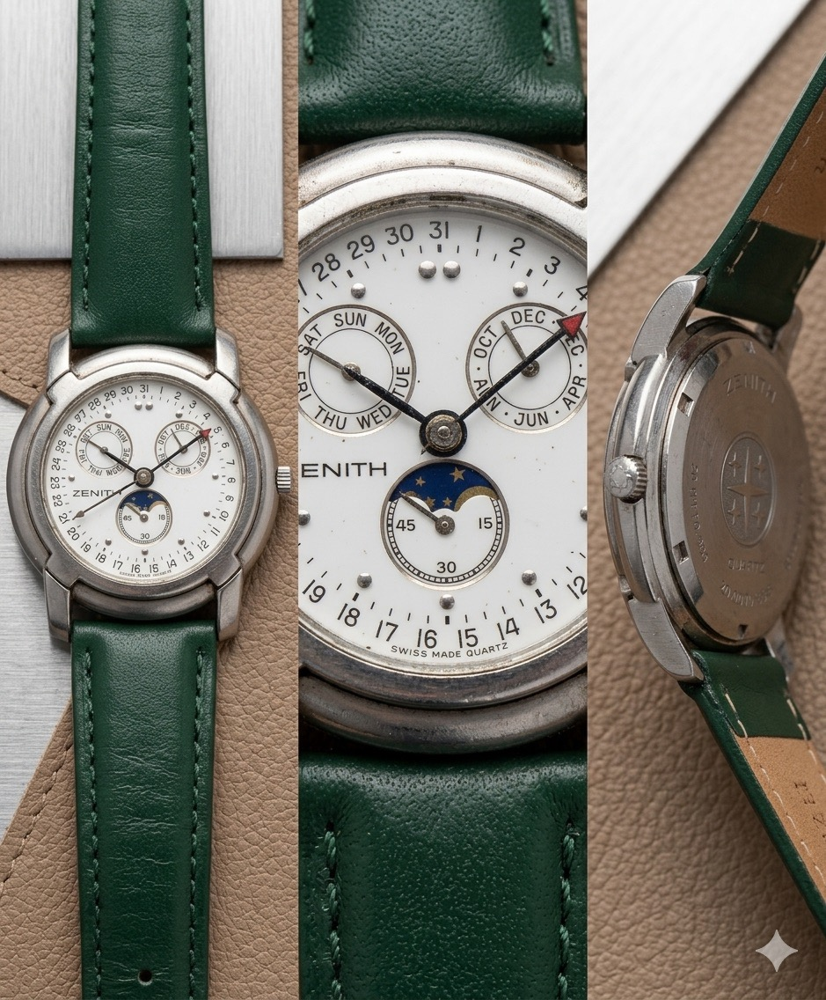
L'élégance classique alliée à la précision suisse
Zenith (Mouvement quartz suisse)enith Elite Astronomic Moon Phase – L’Élégance du Temps Céleste Découvrez l’excellence horlogère avec la Zenith Elite Astronomic Moon Phase, une montre d’exception qui allie sophistication et précision astronomique. Conçue pour les amateurs de complications raffinées, cette pièce incarne l’héritage de la manufacture suisse Zenith, fondée en 1865.
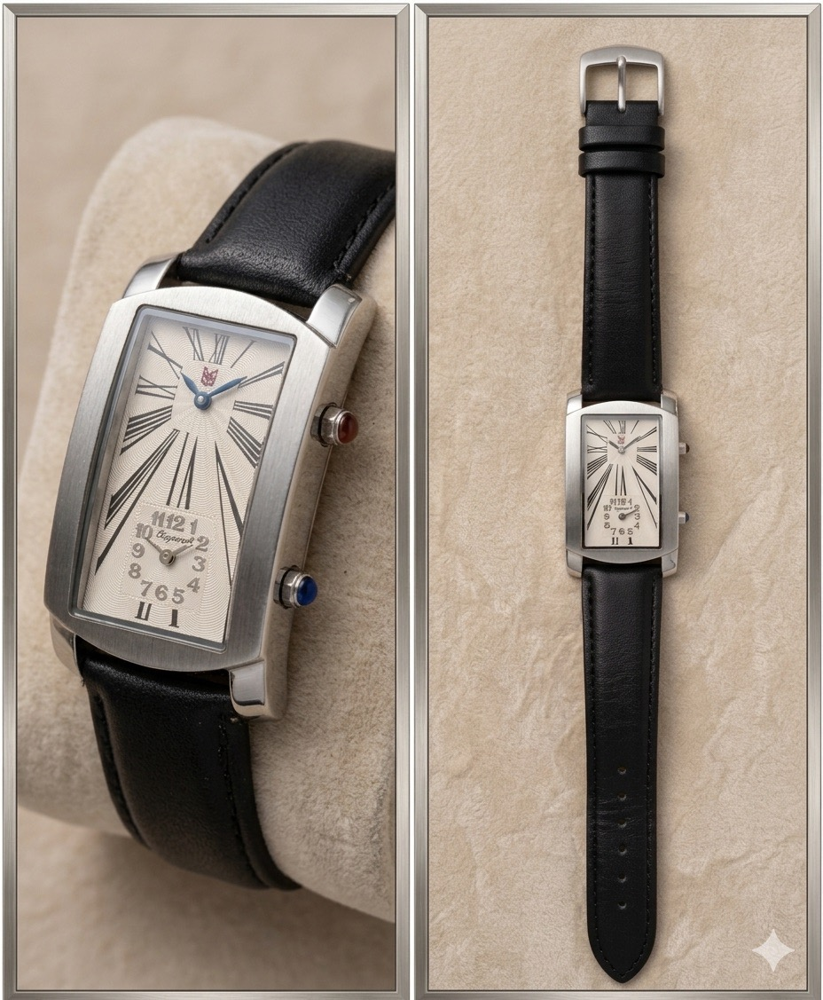
Montre Dugamo "Dual Time" – Design Rectangulaire & Double Fuseau Horaire
Dugamo (Mouvement Quartz)ffirmez votre style avec cette montre Dugamo au design audacieux et sophistiqué. Alliant l'élégance classique d'un boîtier rectangulaire (style "Tank") à une fonctionnalité moderne de double fuseau horaire, cette pièce est parfaite pour les collectionneurs ou les voyageurs en quête d'originalité. Son cadran argenté, magnifiquement travaillé avec un motif texturé en rayons de soleil, se divise en deux parties distinctes : Le cadran principal (haut) : Présente des chiffres romains allongés pour un look vintage et intemporel. Le cadran secondaire (bas) : Affiche l'heure via des chiffres arabes, idéal pour suivre un second fuseau horaire. Le détail qui fait la différence ? Ses deux couronnes de réglage indépendantes, ornées de cabochons colorés (rouge et bleu), permettant de régler chaque cadran avec précision.
Vendu
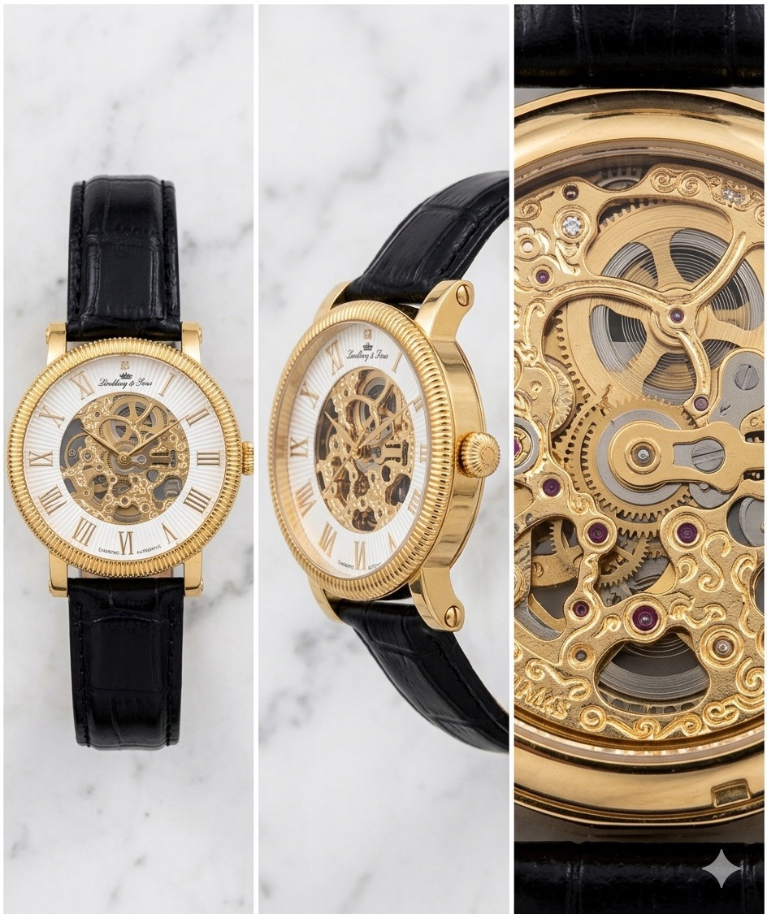
L’élégance mécanique à fleur de peau
Lindberg & Sons (Mouvement automatique)Découvrez cette montre Lindberg & Sons, une pièce d’exception alliant artisanat d’excellence et design sophistiqué. Avec son cadran blanc immaculé orné de motifs géométriques raffinés et sa chaîne en or massif, cette montre incarne le summum du luxe horloger.
Vendu
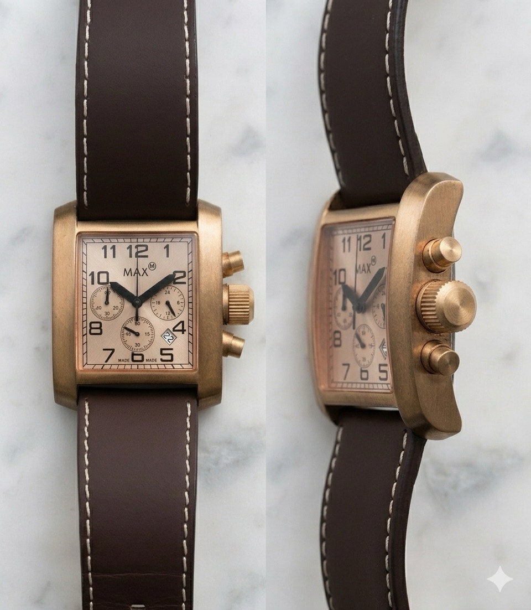
Chronographe Rectangulaire Bronze
MAX XL Watches (Mouvement Quartz)Affirmez votre style avec cette pièce maîtresse de la collection MAX XL Watches. Conçue pour ceux qui aiment les montres de caractère, ce modèle rectangulaire impose sa présence au poignet avec une élégance brute. Son boîtier imposant à la finition bronze brossé offre un aspect "antique" unique qui se marie parfaitement avec son cadran couleur sable. Dotée d'un mouvement chronographe de précision et d'un guichet dateur, elle n'est pas seulement un accessoire de mode, mais un véritable outil de précision. Le bracelet en cuir brun surpiqué apporte la touche finale pour un look baroudeur-chic irrésistible.
Vendu
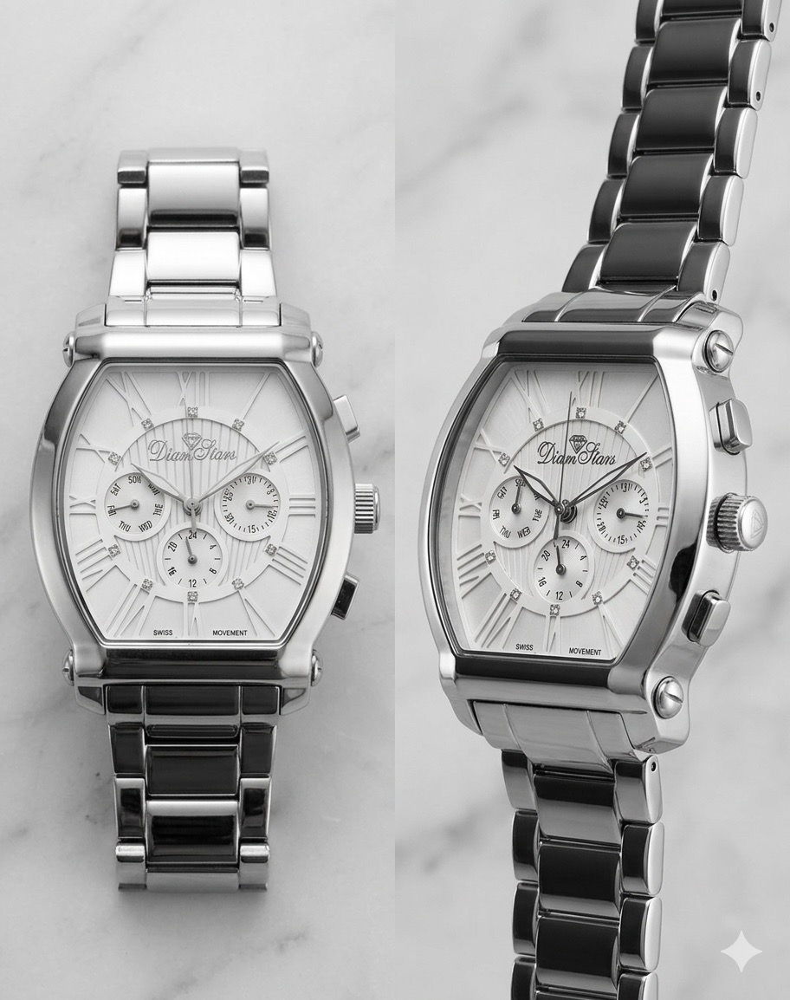
Élégance intemporelle et précision suisse
Diam Stars (Mouvement Automatique)Découvrez l'alliance parfaite entre l'horlogerie de tradition et le design contemporain. La montre Diam Stars se distingue par son boîtier "tonneau" en acier inoxydable poli, une forme audacieuse qui impose son style avec raffinement. Son cadran blanc texturé, protégé par un verre minéral haute résistance, est orné de chiffres romains classiques et d'index sertis de cristaux étincelants. Dotée d'un mouvement suisse (Swiss Movement), elle garantit une précision et une fiabilité irréprochables. Ses trois sous-cadrans multifonctions affichent avec clarté le jour de la semaine, la date et le cycle de 24 heures.
Vendu
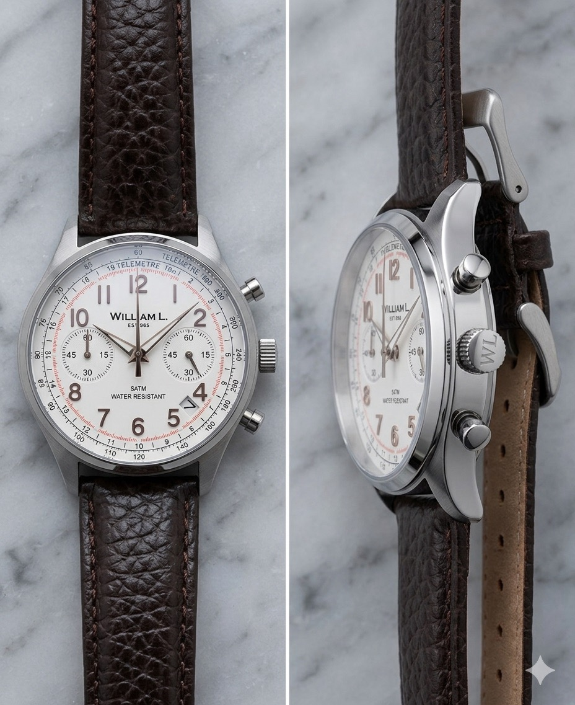
L'élégance intemporelle des années 50 à votre poignet
William L. 1985 (Mouvement Quartz)Inspirée par les chronographes classiques des collectionneurs, cette montre William L. 1985 combine parfaitement l'esthétique rétro et la fiabilité moderne. Avec son cadran double compteur (bicompax) et ses détails soignés, elle s'impose comme l'accessoire idéal pour l'homme moderne en quête d'un style distingué et authentique.
Vendu
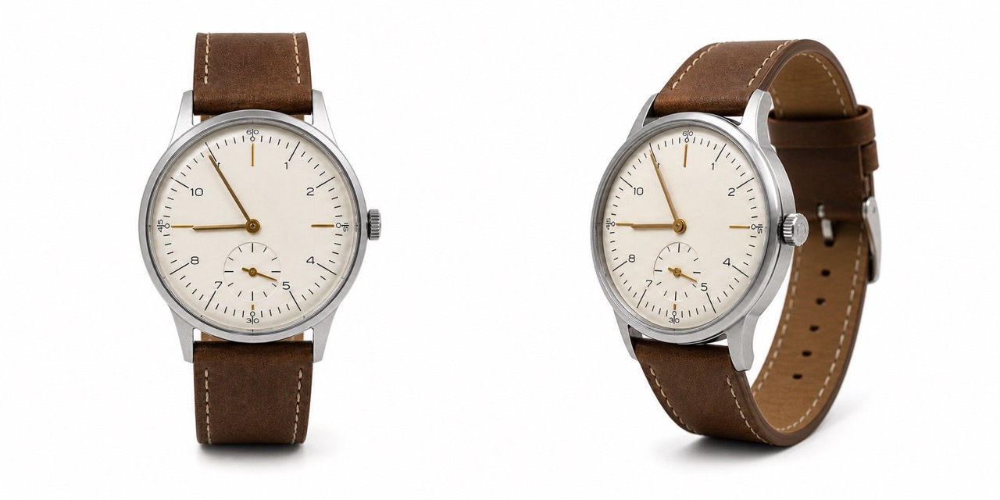
L'Élégance Bauhaus au Poignet
Oxygen (mouvement Automatique)Inspirée par le mouvement artistique Bauhaus et l'esthétique épurée des années 70, la montre Oxygen City Legend 40 est le garde-temps idéal pour ceux qui recherchent une élégance discrète et intemporelle. Imaginée à Paris, cette montre combine avec brio sobriété et caractère.
Vendu
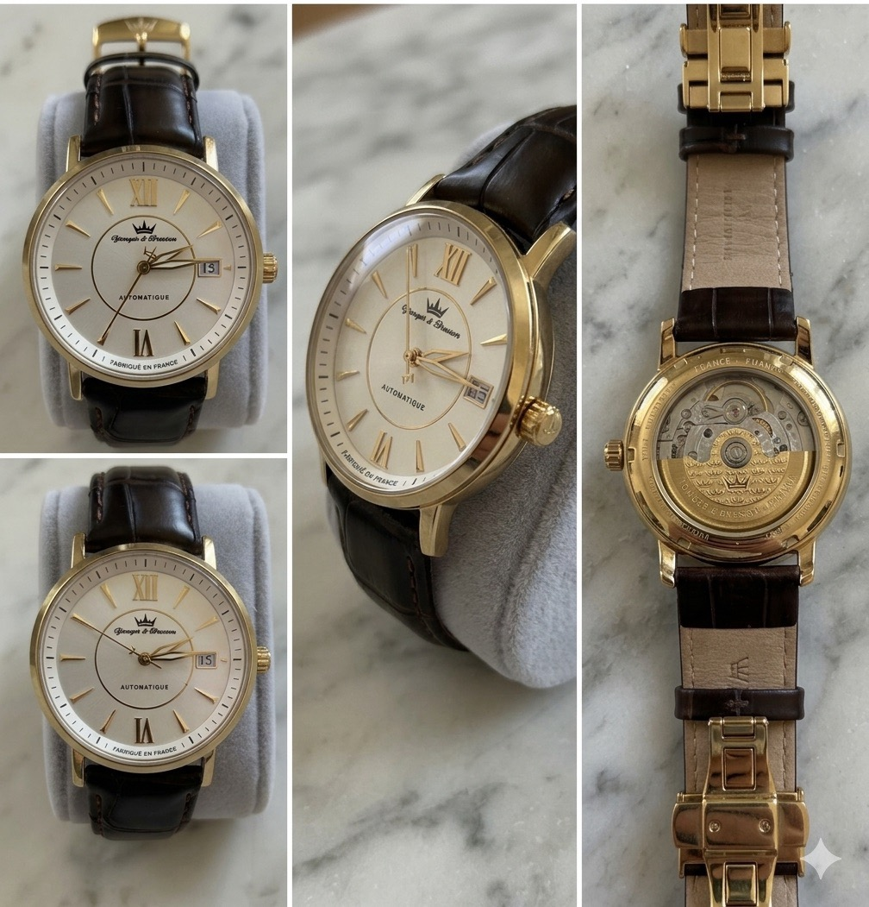
Élégance et Savoir-Faire Français
Yonger & Bresson (Mouvement automatique)Découvrez cette montre automatique Yonger & Bresson, alliant tradition horlogère française et design raffiné. Fabriquée en France, cette pièce incarne l’excellence et le savoir-faire artisanal avec son cadran blanc épuré, ses chiffres arabes noirs et ses aiguilles noires aux détails dorés pour une lisibilité optimale.
Vendu
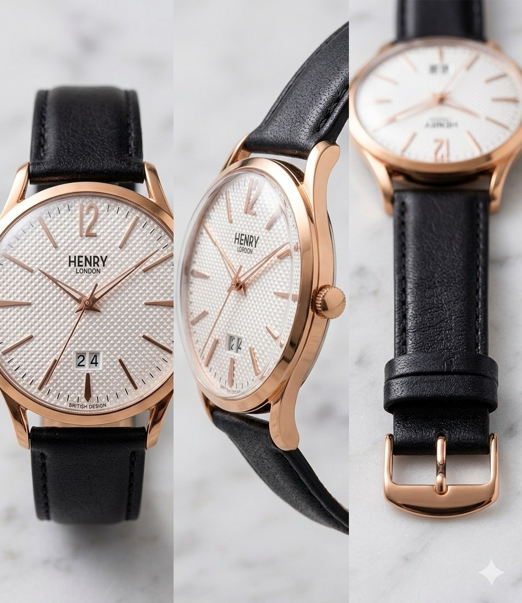
Collection Richmond : L'Élégance Vintage au Poignet
Henry London (Mouvement quartz)Laissez-vous séduire par le charme intemporel de cette montre Henry London, issue de la collection Richmond. Directement inspirée des garde-temps classiques des années 60, cette pièce allie avec brio l’esthétique rétro britannique et le savoir-faire contemporain.
Vendu
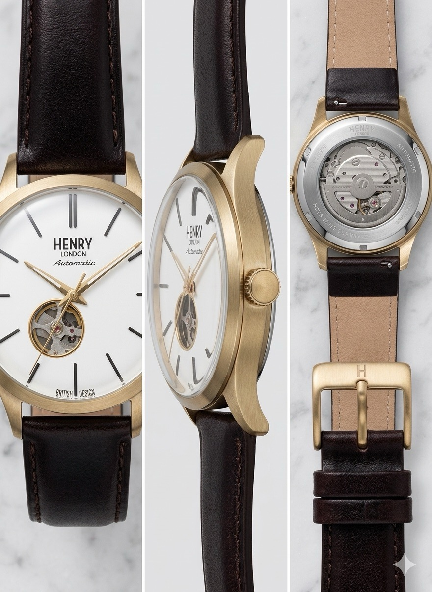
L’élégance du passé, le mouvement d’aujourd’hui
Henry London (mouvement automatique)Apportez une touche de raffinement britannique à votre poignet avec cette montre Henry London automatique, au design à la fois classique et moderne. Dotée d’un boîtier doré au fini élégant, cette montre se distingue par son cadran épuré blanc, sublimé par des index fins et minimalistes. Son ouverture « open heart » à 6 heures laisse entrevoir le mécanisme automatique en mouvement, offrant un spectacle fascinant au quotidien.
Vendu
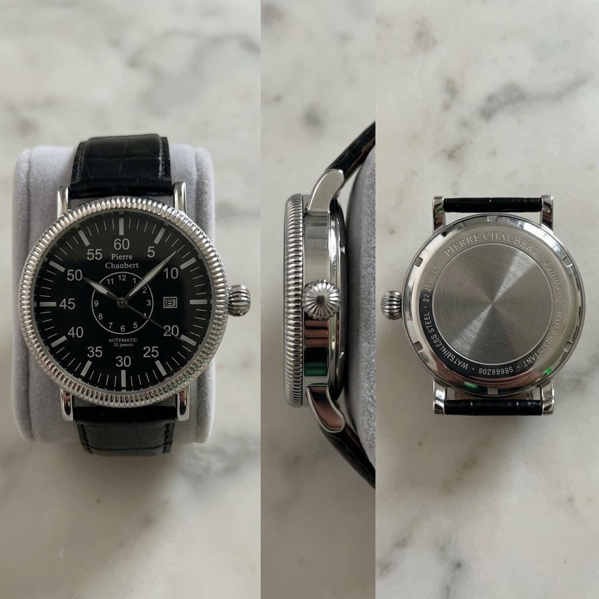
L’élégance intemporelle alliée à l’héritage de l’aviation
Pierre Chaubert (Mouvement automatique)Découvrez l’alliance parfaite entre tradition horlogère et style contemporain avec cette montre automatique Pierre Chaubert. Son design raffiné séduit par son cadran noir profond, subtilement contrasté par des index blancs et une minuterie précise offrant une excellente lisibilité. Dotée d’un mouvement automatique 22 rubis, elle fonctionne sans pile et se recharge naturellement au rythme de vos mouvements. Son sous-cadran central apporte une touche d’originalité, tandis que l’affichage de la date renforce son aspect pratique au quotidien.
Vendu
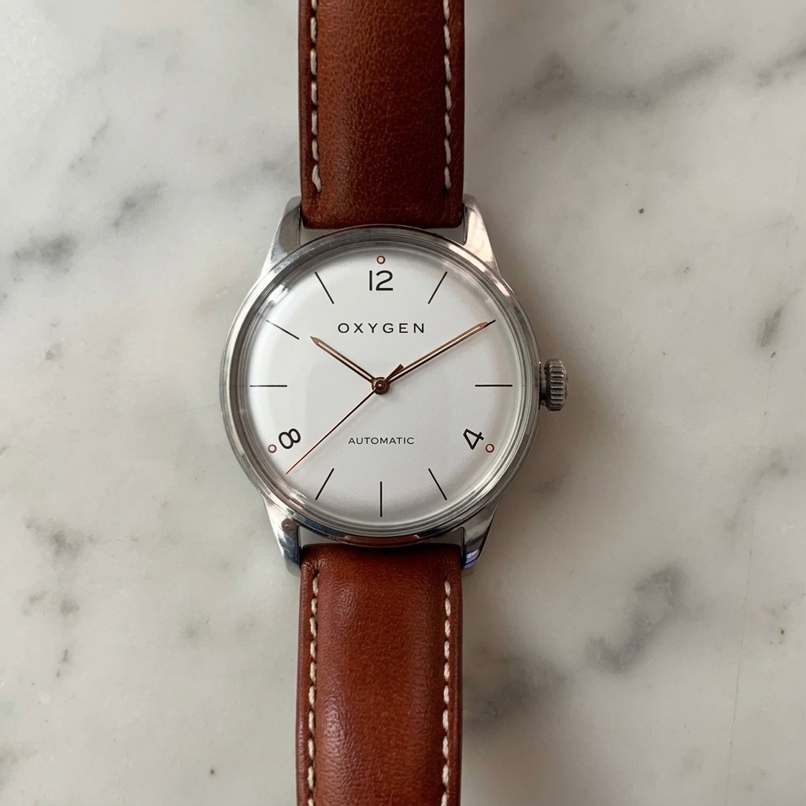
Sous le capot, cette montre bat au rythme d’un mouvement automatique japonais Miyota
Oxigen (Montre automatique)Laissez-vous séduire par l'élégance intemporelle de la Oxygen City Legend 40, une pièce qui marie parfaitement l'esthétique vintage des années 50 et 60 avec la fiabilité de l'horlogerie moderne. Conçue à Paris, cette montre incarne un style "minimaliste germanique" aux accents Bauhaus, idéal pour l'homme moderne en quête de distinction et de sobriété.
Vendu
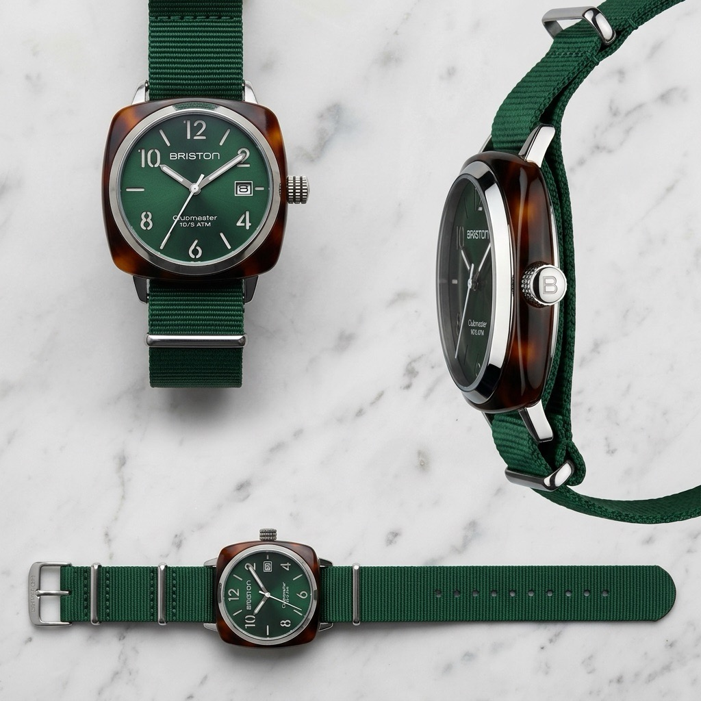
Élégance sportive et esprit vintage
Briston (Mouvement quartz)Laissez-vous séduire par la Clubmaster Classic, le modèle emblématique de la maison Briston. Avec sa forme "coussin" distinctive et ses matériaux innovants, cette montre incarne un style "sport-chic" à la fois vintage et résolument moderne. Un Design Unique et Audacieux Le point fort de cette pièce réside dans son boîtier de 40 mm confectionné en acétate de cellulose "écaille de tortue". Ce matériau noble, traditionnellement utilisé dans la lunetterie haut de gamme, offre des reflets ambrés uniques à chaque exemplaire. Il est ici associé à un superbe cadran vert anglais finition ensoleillée, qui capte la lumière avec élégance.
Vendu
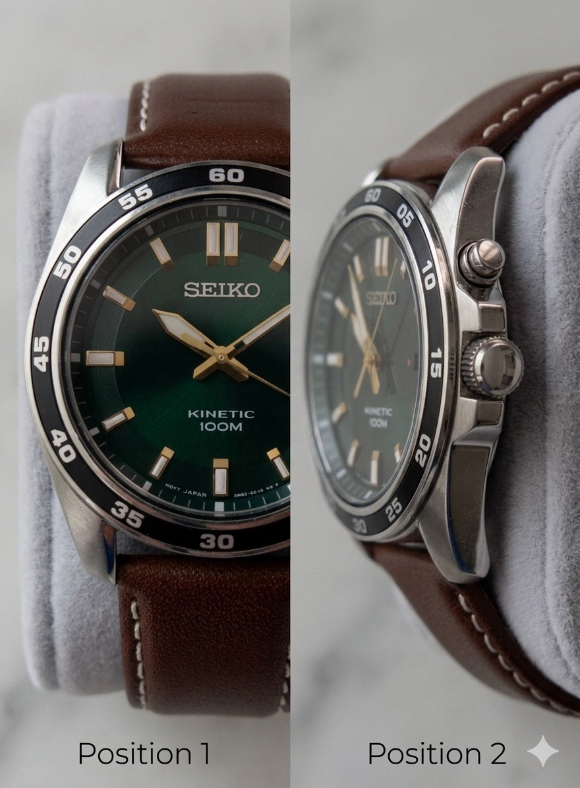
Montre Seiko Kinetic – Élégance et performance au quotidien
Seiko (Mouvement automatique à Énergie Cinétique)Découvrez l’alliance parfaite entre innovation japonaise et style intemporel avec cette montre Seiko Kinetic. Son cadran vert profond apporte une touche d’originalité tout en restant élégant, sublimé par des index lumineux et des aiguilles dorées pour une lisibilité optimale. Équipée de la technologie Kinetic, cette montre se recharge grâce aux mouvements du poignet, combinant la précision du quartz avec l’autonomie d’un mouvement automatique. Plus besoin de pile : elle vous accompagne durablement au fil du temps. Son boîtier en acier inoxydable robuste est associé à une lunette sportive graduée, offrant un look à la fois moderne et dynamique. Le bracelet en cuir marron, avec surpiqûres apparentes, ajoute une note chaleureuse et raffinée, idéale pour toutes les occasions.
Vendu
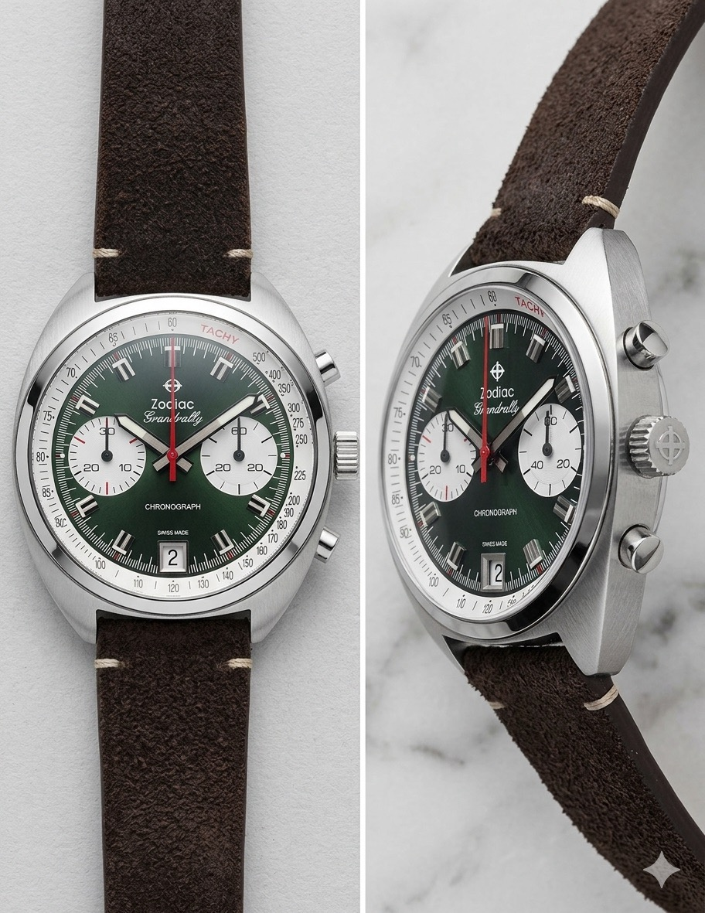
L’Élégance Intemporelle des Rallyes Automobiles
Zodiac (Mouvement quartz)Découvrez la Zodiac Grandrally, une montre iconique qui allie l’héritage horloger suisse à l’esprit audacieux des rallyes automobiles. Inspirée par l’univers des courses d’endurance des années 1960 et 1970, cette pièce de collection incarne à la fois la robustesse, l’élégance et une histoire riche en émotions. Que vous soyez un passionné d’automobile, un collectionneur ou un amateur de montres vintage, la Grandrally est un choix raffiné qui traverse les époques avec style.
Vendu
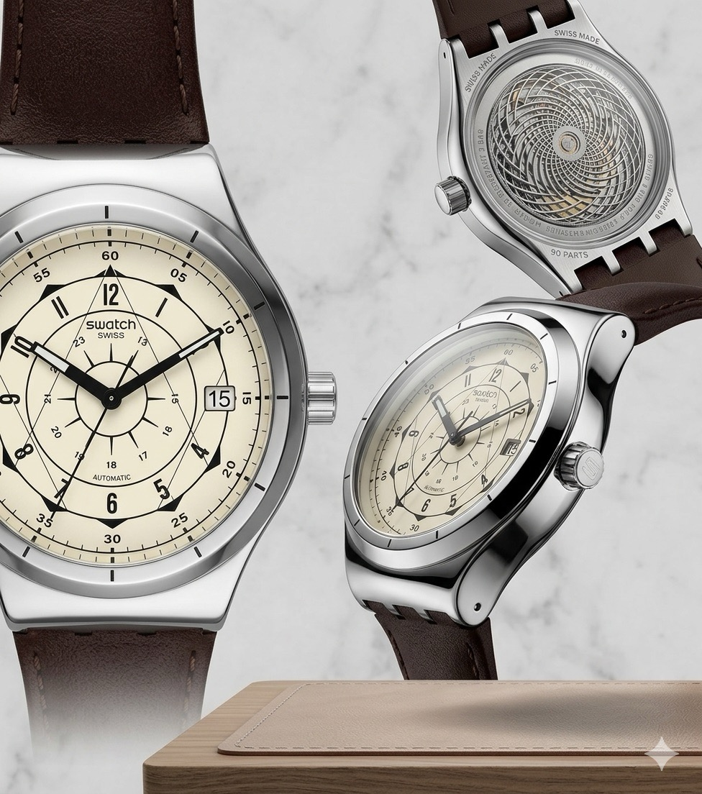
L'élégance classique rencontre la révolution mécanique
Swatch Sistem51 (Mouvement automatique)Découvrez la Swatch Sistem51, une montre automatique innovante qui allie design contemporain et prouesse technique. Entièrement conçue et assemblée en Suisse, elle se distingue par son mouvement mécanique révolutionnaire composé de seulement 51 pièces, garantissant fiabilité et précision. Son cadran épuré, ici présenté avec une esthétique géométrique moderne et une lecture claire, offre une affichage de la date à 3 heures et des index bien lisibles. Le boîtier au fini poli apporte une touche élégante, parfaitement complétée par un bracelet en cuir pour un style à la fois chic et décontracté.
Vendu
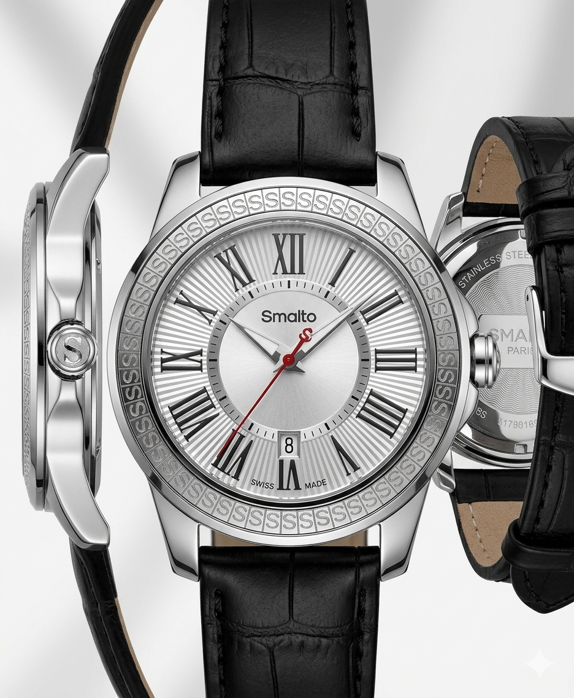
Montre Smalto Business Sport – Précision et Caractère
Smalto (Mouvement Quartz)Affirmez votre style avec cette pièce maîtresse de la maison Smalto. Alliant tradition horlogère et design contemporain, cette montre se distingue par son raffinement unique.
Vendu
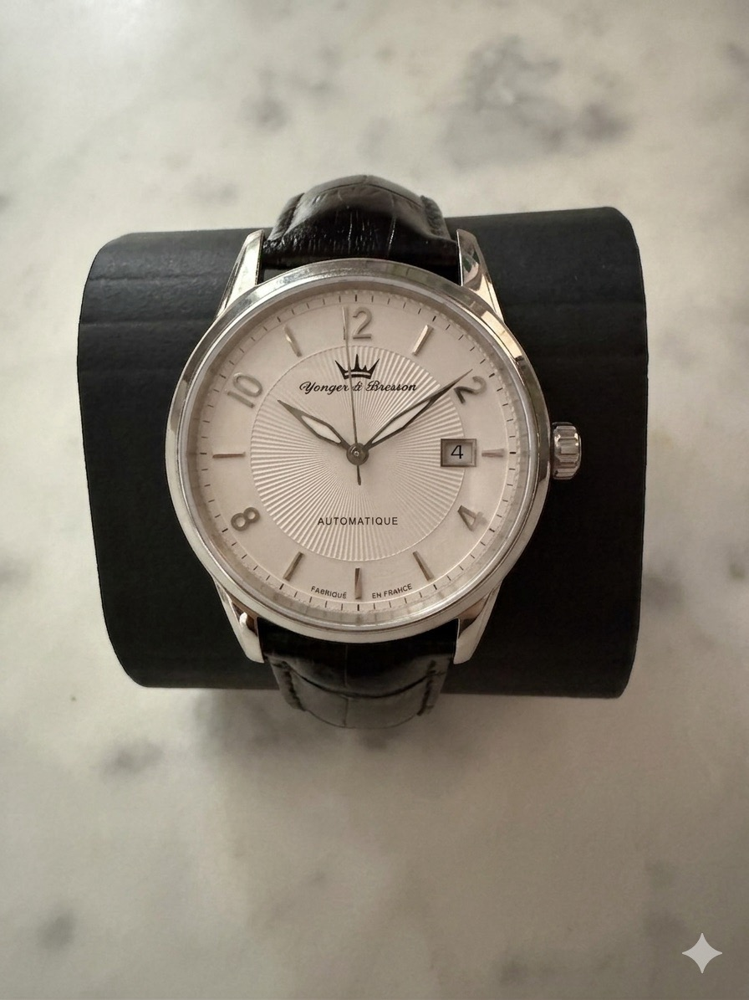
Plongez dans l'univers de l'horlogerie française avec ce garde-temps d'exception signé Yonger & Bresson. Alliant tradition et modernité, cette montre automatique incarne le savoir-faire historique de la maison basée à Morteau. Son cadran argenté, magnifié par un travail de guillochage en éventail, offre une profondeur unique. Les index en chiffres romains et les aiguilles effilées ajoutent une touche de classicisme intemporel. Ce modèle se distingue par sa complication "réserve de marche" visible à 9h, vous permettant de suivre l'autonomie de son mouvement automatique.
Un hommage à l'art du temps
Thomas Earnshaw Beaufort (Mouvement automatique)Cette montre Thomas Earnshaw, issue de la prestigieuse collection Beaufort, est une pièce d'horlogerie d'exception qui allie l'héritage classique britannique à une mécanique moderne fascinante. Elle se distingue par son cadran à double balancier apparent, offrant un spectacle hypnotique à chaque mouvement du poignet.
Modèle Automatique "Cœur Ouvert"
Yonger & Bresson (Mouvement automatique)Cette montre Yonger & Bresson incarne le savoir-faire horloger français avec un design à la fois classique et raffiné. Son boîtier doré aux lignes élégantes épouse parfaitement le poignet, offrant une présence discrète mais distinguée. Le cadran blanc épuré est sublimé par des index dorés minimalistes et un guichet date positionné à 3 heures pour une lecture pratique au quotidien. À 6 heures, la mention “Fabriqué en France” rappelle l’origine et la qualité de fabrication de la maison.
L’Élégance du Bauhaus à votre Poignet
Huckleberry & Co. Archibald (Mouvement automatique)Le boîtier de 40 mm en acier inoxydable, doté d'une finition or rose raffinée, encadre un cadran blanc cassé aux détails minutieux. Les index discrets et les aiguilles effilées soulignent une approche où "moins, c'est mieux", rendant cette montre parfaite aussi bien pour une tenue formelle que pour un style quotidien chic.
Élégance et Tradition Japonaise
Seiko Presage (Mouvement automatique)Sublimez votre poignet avec cette pièce issue de la célèbre collection Seiko Presage Cocktail. Inspirée par l'univers sophistiqué des bars à cocktails et plus particulièrement par le célèbre "Mockingbird", cette montre allie parfaitement l'artisanat horloger japonais et un design intemporel.
Élégance et Technologie au Poignet
Apple WatchCette Apple Watch allie un design iconique à des technologies de pointe pour vous accompagner dans toutes vos activités. Dotée d'un boîtier en aluminium argent léger et robuste, elle se distingue par son allure moderne et polyvalente.

À propos
Passionné par l’horlogerie depuis plus de vingt ans, j’ai consacré ces années à rechercher des pièces rares et des artisans d’exception.
Chaque montre de cette collection est choisie pour son histoire, son savoir-faire et son esthétique intemporelle. Elles sont bien plus que des instruments de mesure : ce sont des œuvres d'art à porter au poignet.
La musique classique, et particulièrement le piano, accompagne souvent mon processus de sélection. Elle m'inspire des atmosphères de luxe et de raffinement que je cherche à transmettre à travers ces pièces.